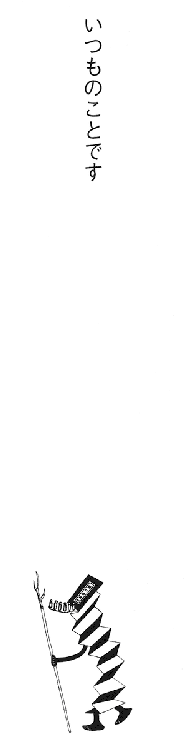
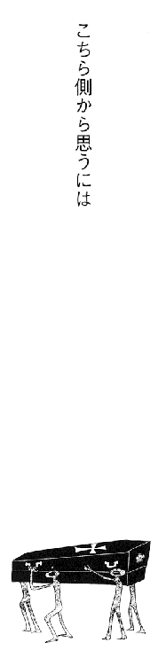
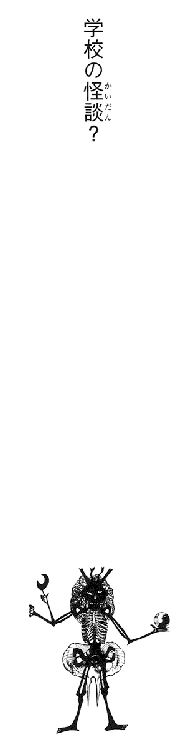
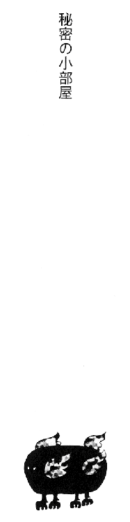
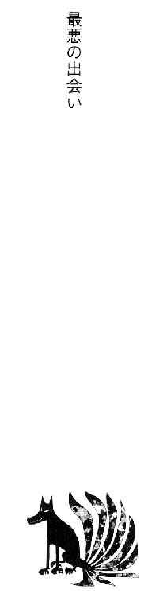
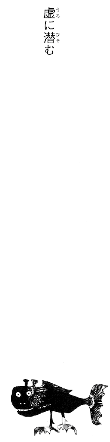
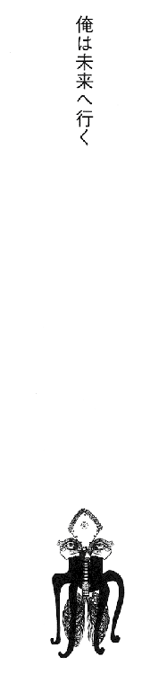

| [香月日輪] 妖怪アパートの幽雅な日常03 | |
| 香月日輪 | |
| (2015) | |
|
妖怪アパートの幽雅な日常③
香月日輪
|
〈帯〉
活字力全開の新シリーズ
学校の怪談？
講堂の小部屋にオバケが出るという噂が。
確かめに行った夕士と田代、妖魔フールがそこで目にしたものは......。
〈カバー〉
本当に尊敬できる大人は少ない。ただの「年を食っただけの奴」は、そこらへんに転がっているけれど。
妖怪アパートの幽雅な日常③
香月日輪
講談社
ＹＡ！ ENTERTAINMENT
妖怪アパートの幽雅な日常③
香月日輪

いつものことです
「おはよう、夕士くん！」
今朝も、久賀秋音ちゃんの元気な声が廊下に響き渡る。
「うはよーっス、秋音さん」
俺は少々寝不足だ。昨夜は寝るのが遅くなってしまった。
それでなくても午前五時なんだ。こんな朝早く起きている高校生は、新聞配達のバイトをしている奴だけだ。
「じゃあ、始めるわよ～ん」
「しゃっス！」
気合いを入れて一礼する俺に、秋音ちゃんはホースで水をかける。
初夏とはいえ、早朝の水行はやっぱりクる。肌が、筋肉が、キュ──ッと締まり、すぼまった肺からすべての空気が出ていって、新しいものと入れ替わる感じがする。心臓が刺激を受けて活発に動き、身体中に血液を循環させる。
そうして俺は、精神力を高めるという「お経」を唱え続けるのだ。
俺のトレーナーをしてくれているのは、生まれもった霊能力をいかし、プロの除霊師をめざす女子高生、久賀秋音ちゃん。高校三年生。ポニーテイルが可愛い元気な女の子。特徴は「驚異的大食い」だ。
これが俺の、「新しい俺」の、春から始まった日課だった。
俺は、稲葉夕士。条東商業高校の二年生。両親に先立たれ、一人暮らしをしていることをのぞけば、商業高校でいろんな技術を身につけて、卒業後は公務員か即戦力のビジネスマンをめざす、ごくフツーの学生だった............この春までは。
不思議な運命に導かれて、ここ「寿荘」に住むようになって、俺の「生き方」は天地がひっくり返るほど変わった。
「寿荘」──通称「妖怪アパート」。年季の入った大正モダンな洋風建築からでもお約束な、本物のお化け屋敷だった。黒坊主に手首だけの幽霊、マージャン好きな鬼たち、のっぺらぼうの口だけ女の他、光るモノ、漂うモノ、はいずるモノなどなど。まさにお化けのオンパレード。このアパートでは、それら、この世のものではないモノたちと、この世のもの、つまり人間たちとが「共存」しているんだ。
な？ これだけでも俺のそれまでの常識とか考え方が吹っ飛ぶってもんだろ。おまけにその「人間たち」というのも、霊能力者やら、次元を行き来する商売人やら、人間かどうか不明な奴やらと、超個性的だ。一度はここを離れた俺も、今じゃすっかりその「仲間」だけどな。
というようなことを考えているうちに、今朝も二時間のお勤めが終わった。この頃では、ますます時間が早くたつ感じがする。
「おつかれ～！」
「ウス！」
身体を拭き拭きアパートに入ると、二階へ上がる階段に、身長十五センチほどの小人がちょこんと立っていた。
「ご機嫌うるわしゅう、ご主人様。今朝もお勤め、まことにお疲れ様でございます」
と、小人はおおげさにお辞儀する。
「おう！」
こいつは「フール」。魔道書『小ヒエロゾイコン』の案内人だ。正体は、精霊？妖精？ なんだかよくわからないが、とにかくまあ、俺の「僕」ってわけ。
「じゃ、風呂入ってくるわ」
「ごゆるりと行ってらっしゃいませ」
フールは、またまたおおげさにお辞儀をした。
この、世にも稀な妖怪アパートに帰ってきた春。俺は、さらに世にも稀な「出会い」をしてしまった。
魔道書『小ヒエロゾイコン』。
二十二匹の「精霊」あるいは「妖魔」を、魔術でもって封じ込めた魔法の本。その主は、二十二匹の精霊たちを自由に「使役」できるというのだ。
なんの因果か冗談か、俺がその主に選ばれてしまった！
俺は、アパートの住人で同じく自分の魔道書『七賢人の書』を持ち、その力を使うことのできる「古本屋」や秋音ちゃんら先輩の指導のもと、魔道書の持つ力を自在に操る「魔書使い」の道を歩むこととなったのだ！
......なんていうと、これからファンタスティックな大冒険が始まるみたいだけど、そんな展開には毛ほどもならないだろう。なぜなら、この『小ヒエロゾイコン』は、魔道書は魔道書でも「パロディ」だからだ。
もともと『ヒエロゾイコン』という大魔道書があって（こちらは七十八匹もの妖魔が封じられているらしい）、「プチ」はそれをマネてつくったもので、どこのどんな魔道士がつくったか知らないが、封じられている精霊、妖魔どもときたら、どこかちょっとズレてる案内人の「フール」を筆頭に、あっという間に力を使い果たしてしばらく再起不能に陥っている「万能の精霊」とか、すっかりもうろくして何も思い出せない「英知の梟」とか、ホラばかり吹いている役立たずの「長靴をはいた猫」とか。とにかくもう使えねぇ奴らばっかりなんだ。俺が本気でブックマスターになったとしても、こんな使い魔ばかりじゃどうしようもない。
というわけで、俺の目標はあいかわらず公務員かビジネスマンである。
でも、魔術が使える公務員なんてすごくないか!? 本物の魔術だぜ!? 手品じゃなくて。
俺が秋音ちゃんらについて「修行」をするのは、魔書の主としての最低限の霊力をつけるためだ。魔道士が魔術を使う時、魔道士は命を削っているらしい。俺は自分の寿命を縮めないために、修行して精神力を高めなければならないんだ。
朝五時から七時までの経文読み。休みの日はさらに、昼五時間の般若心経読みが加わる。春休みに入ったとたん始まったこの修行も、季節が変わろうとする今、すっかり俺の「日常」となった。
フツーの高校生の俺が、「朝の水行」をしてから学校へ行く。鞄の中に「魔道書」を持って......笑えるだろ!?
そして俺は、ごく普通の高校生だから、魔道士であっても魔道書を持っていても、妖怪との「バトル」なんてあるはずもない。学校はごく普通の商業高校で、街はごく普通の住宅街だからだ。
妖怪アパートに住んでいても、魔道士であっても、ごく普通の日常というのが、なんだかおかしいというか、ほのぼのしてしまう。
だから俺は、この妖怪アパートが好きなんだ。
何が「特別」で、何が「普通」なのか。
ここにいると、その価値観が無限に多様なんだとわかる。
すべてが、無限に多様な可能性を秘めているとわかる。
俺自身にも無限に多様な可能性があるんだ。俺自身も「特別」であり「普通」なんだ。
さて、冷えた体をアパートの地下洞窟天然温泉で温めようと下りてゆくと。
そこに、長谷とクリがいた。
「イヨ、お先っ！修行おつかれ～。いや～、温泉で朝風呂は最高だな～。な～、クリ」
「長谷～......お前な～～～......」
長谷泉貴は、俺の親友。今は都内の有名進学校に通っている。
両親を失った俺を支え続けてくれた長谷に、アパートのこと、「プチ」のことを打ち明けた時、その事実と現実を、長谷は受け入れてくれるのかと足が震えた。長谷を失いたくないけど、すべてを正直に話さなければならない。その狭間で、俺は引き裂かれそうだった。
結果からいえば、長谷は妖怪アパートをすっかり気に入り、休みともなればバイクをすっ飛ばして泊まりに来るようになったんだが。
「お前のせいで、俺は寝不足なんだぞ。人より先に呑気に朝風呂しやがって」
「しょうがないだろ。クリが放してくれなかったんだから」
長谷は、クリの短い髪を撫でた。
クリは、実の母親から虐待を受けて死んだ子どもだ。育ての親の犬のシロとともに、このアパートでみんなから可愛がられながら成仏するのを待っている。下ぶくれの顔とクリクリの目が可愛い男の子だ。
このクリが長谷にすっかりなついてしまい、長谷が来るとそばについて離れないのだ。長谷もまんざらじゃないらしく、自分を「休日のパパ」なんぞとぬかしている。
ゴールデンウィークに入った昨日から、当然のように連泊しようとやってきた長谷は、いつものようにアパートのみんなへの手土産を山のように持ってきた。その中にテレビゲームがあり、居間のテレビにつないでみせた『スーパーマリオ』の画面に、クリが夢中になってしまったんだ。
クリはクリクリの目をさらにクリクリにして、ゲームの画面をかぶりつきで見ていた。その様子が可愛くて微笑ましくて、長谷と俺で対戦してみせたのはいいんだが、ゲームオーバーになるとクリは無言でもっともっとと催促し（クリは口がきけない）、やめさせてもらえなかったんだ。夜中の二時まで。
長谷とクリは朝ゆっくりと寝こけていられるだろうが、俺には修行があるんだ。修行が！ 秋音ちゃんは、寝不足だろうが寝ていまいが、絶対容赦してくれないんだよ!!
それでもまあ、温泉にじっくりつかるとすべての疲れが身体中から流れ去ってゆく。
薄暗くて静かな洞窟に、ゆらゆらとたちこめる蒸気。湯の温度は絶妙で、いつまでもつかっていられる。
「ハ～～～......極楽」
長谷と俺は声を揃えた。湯につかるたびにこう言わずにはいられない。
そして、朝飯！ 朝飯だ!!
「おはよーございます!!」
食堂の入り口で一礼。
「やー、オハヨー」
「おはよう」
妖怪アパートの食堂には、いつもの個性的な面々が揃っている。
「昨夜は遅くまで起きてたね～、夕士クン。今朝は起きられたかい？ ゲームのやりすぎは目を悪くするよ～」
ラクガキのような惚けた顔で笑うのは、詩人で童話作家の一色黎明。耽美でグロテスクな大人の童話を書き、一部のマニアに熱狂的に人気のある作家だ。
「ケッ！」
詩人の長年の友人、画家の深瀬明はテレビゲームと聞いて舌打ちする。画家のポップでパワフルな絵は日本より海外で人気がある。本人は画家というより暴走族のヘッドみたいだが。実際バイカーな画家は、よく愛犬シガーとタンデムで旅行している。
「テレビゲームなんざ、どこが面白ぇんだ」
「それは、クリに言ってください」
俺は、クリを画家にあずけた。
「いや～、やっぱり休みの朝っていいなあ！」
妖怪のくせに大手化粧品メーカーで働く「佐藤さん」が、休みの朝をのんびりと過ごしている。庭いじりが好きな「山田さん」はスポーツ新聞を読み、妖怪託児所の保母さん「まり子」さんは今日も絶世の美女で、秋音ちゃんは大盛り飯をかきこんでいる。いつもの朝。
そして、今朝のるり子さんの激うまメニューは......、
さんまのみりん干しに筍とわかめの煮物、五目ひじきに温泉卵、ベーコンとアスパラガスの炒め物。味噌汁の具はアサリ。当然、飯はツヤツヤのピカピカ。
長谷が来た時はトーストを用意することも忘れないるり子さんは、小料理屋の女将を夢見て果たせず死んだ幽霊だ。手首だけの姿は、殺されてバラバラにされたからだと思うと、ちょっと切ない。るり子さんは、この妖怪アパートで俺や秋音ちゃんが「うまいうまい」と自分の料理を食べてくれることを幸せに感じ、日々賄いにいそしんでいる。
「みりん干し、うめぇ～！」
深みのある甘さの肉厚のさんまを、頭からバリバリ食った。
「アサリ汁が胃にしみるな～」
長谷はトーストを食べながら味噌汁を飲む。長谷はこのアパートで、パンと味噌汁が合うことを教えてもらったんだ。
「今朝も朝飯最高っス、るり子さん!!」
俺たちが声を揃えると、るり子さんは白い指をもじもじとからませた。
「見て見て！ 今届いたの！」
秋音ちゃんが、木箱に入ったサクランボを持ってきた。そのなんて鮮やかな、まるで宝石のような赤い輝き。
「うおー、ピカピカだ！」
「でけえ!!」
「今朝つんだばっかりだって！ 初夏ねぇ～」
秋音ちゃんはそう言って、クリに一粒食べさせた。大きなサクランボをほおばったクリは、まるでキャンディを食べているようだった。
このアパートには、各地の山や海で暮らしている妖怪たちから旬の食材が届けられるという。春には春の、夏には夏の喜び。日本には四季があることを実感する。
届けられた夏一番のサクランボは、大きく肉厚で食べごたえがあった。さわやかな甘さが、初夏そのものだった。
アパートの居間。開け放した縁側から、さらさらと風が通ってゆく。木々の新緑が初夏の陽射しに輝いていた。
山田さんが、丸っこい背中をさらに丸めて雑草取りをしている。
塀一面に這う蔓薔薇が、可憐な花を満開にさせていた。でも、赤、白、黄色、ピンクと咲き競う薔薇たちは、飛んできた虫をパクリと一飲みにした。
「......あれ、薔薇じゃないんだ......」
「そうみたいだな......」
縁側で、俺と長谷は顔を見合わせると同時に吹き出した。
「どうだ、稲葉？ 学校生活はうまくいってるか？」
長谷が親父みたいなことを言うもんだから、俺はさらに笑えた。
「うまくいってるよ。って、別になんもないぜ？ 勉強してクラブしてバイトして」
俺は肩をすくめた。
長谷の言う「うまくいってるか？」は、「プチ」のことを言っているんだと思う。
魔物を背負って、はたして普通の生活が送れるのだろうかと。
長谷の心配はもっともだ。これが漫画やアニメなら、学校に妖怪や化け物が現れ、俺や他の生徒たちが巻きこまれてゆく......なんて展開になるんだろう。
「ンなことにゃならねぇよ。ただの商業高校だからな、うちは。上院高とかは、昔っからよく『出る』って聞くけどなぁ」
今のところ、「プチ」は、その案内人のフールは、俺の言いつけを守って人前で姿を現していない。
他の妖魔たちは俺が呼び出さないと姿を現さないんだが、「 ０のフール」だけは、自由に本から出たり入ったりできるらしい。だから俺は、フールに急に姿を現さないようにと言いつけている。フールはおおげさにお辞儀をして「仰せのとおりに」とか言ってたが、そのおおげさぶりが嘘っぽいんだよな～。
「あんなものが急に目の前に現れたら固まるもんな」
と、長谷は笑った。長谷は固まった本人だ。
わずか十五センチほどの人形のようなものが、自在にしゃべったり動いたりしているのを見て、長谷ほど頭の良いリアリストじゃない、そこら辺の奴らは、「わぁ、よくできたフィギュアだね」と笑ってくれるかもしれないが、それでも、そんなものを肩に乗せてしゃべりあってる俺は、充分変態に見えるから、それは避けたい。
できるならこのまま何事もなく、「プチ」を開くこともなく、過ごしていければと思うんだが......。

こちら側から思うには
その時、あたりが急にシンとした。
もともと昼間のアパートは静かだが、それでもさわさわとした風の流れさえもがピタリと止まる感じがしたのだ。
「ん？」
それは、長谷にもわかるくらいだった。
俺は、ハッとしてピンときた。
「龍さんだ......！」
はじかれたように門のほうを見る。
龍さんは、秋音ちゃんのあこがれの君。とびきり格の高い霊能者らしい。いまいち謎の人だが、これこのとおり、彼が現れると物の怪たちが一斉に静まり返り、バ～ッと道を開けたりする。それは劇的だ。
門の向こうから、黒い人影がゆっくりと現れた。
長身で細身の身体を、丈の長い黒いジャケットスーツに包んで、長い黒髪を後ろで束ねている、いつものスタイル。
「龍さん!!」
俺は、飛んでいってしまった。
「やあ、夕士くん。久しぶり。おかえり！」
龍さんは、やさしい笑顔でさり気にそう言ってくれた。
高位の霊能力者であるからだろうか。独特の存在感と非常に高い知性と理性の持ち主であることが、話しぶりからひしひしと伝わってくるこの人に、俺は魅せられていた。
人生は長く、世界は果てしなく広い。肩の力を抜いていこう。
こう言ってくれたのが龍さんだった。この言葉は、俺の新しい世界への扉を開き、俺の支えのひとつとなった。
こう言われて、素直にそう思うことができる──。
それが、この人の力なんだと思う。
あれからいろいろあって、今また龍さんに会えて、俺はなんだかしみじみとしてしまった。
その俺の顔を覗きこんで、龍さんはちょっと目を丸くして言った。
「気配が全然違うな、夕士くん。聞いたぞ。魔書と通じ合ったそうだね」
「そ......」
うまく言葉が出てこなかった。大、大、大、大先輩に対して、なんて言ったらいいんだろう。龍さんはうんうんとうなずきながら、俺の顔や肩や腕や胸をさわった。
「い......今......今、持ってくるっス!!」
そう言って、くるっと振り向いたところに長谷が来ていた。
「あ、こいつマブダチ......親友の長谷泉貴っス！ 俺のこと......全部知ってくれてて......」
長谷の顔を見ながらそう言うと、俺はいまさらながら胸がいっぱいになった。
慌ててアパートに駆けこんでゆく。後ろで二人が自己紹介しあう声が聞こえた。
自分の部屋へ入って、大きく深呼吸した。なんだか泣きそうになっている自分がおかしい。
机の上の「プチ」を手にとる。窓からは、龍さんと長谷が何やら話しているのが見えた。
俺は、もう一度深呼吸をして部屋を出ていった。
「これっス。小ヒエロゾイコン」
国語辞典ぐらいの大きさの薄っぺらい本を龍さんに手渡す。
「ふ～ん......」
龍さんは、興味深げに「プチ」を眺め回した。ページをゆっくりとめくってゆく。俺と長谷は、じっとその様子を見守った。
「へぇ......すごいのが入ってるな」
龍さんは、ちょっと目を見張った。
「わかるんスか？」
「なんとなくイメージは浮かぶね」
やっぱりこの人はすごい......んだろうか？ よくわからない。
「でも、役立たずばっかりっスよ!?」
「戦車」のカードを見ていた龍さんに俺は言った。
「それは『ヒポグリフ』っつって、黒い馬みたいな鳥なんだけど、乗れなくて」
「ああ......はははは！ ああ、乗れない乗れない」
龍さんは大笑いしながら首を振った。
「知ってるんですか？」
長谷が尋ねた。
「ヒポグリフは神の馬だからね。よほど高位の術者か、よほど気持ちの通じた者でないと乗るのは無理だろうねぇ」
「龍さんは乗ったことあるんスか!?」
「ないない。アブナイし」
大霊能力者は、軽～く言った。
「お！ これは......魔犬かな!?」
「あ、そいつまだ仔犬で......。育つのに二百年かかるって」
龍さんは吹き出した。
「あと、英知の梟はボケてるし、長靴をはいた猫はホラ吹きだし、死神はクリに向かってお前は三日以内に死ぬ！ なんてゆーし......」
「アッハッハッハ!!」
龍さんと長谷は大笑いした。俺は自分で言ってて虚しくなってきた。
「いや、でもまあ......本物のヒエロゾイコンクラスの魔書でなくて良かったよ」
龍さんは、俺の頭をくしゃっと撫でた。
「秋音さんも同じことを......」
「そう。いきなりでびっくりしただろうけど、なんてことないからな」
その言葉が、あらためて胸にしみる。
「古本屋さんにもそう言われたっス」
「ああ」
「俺としては、どうせなるんなら龍さんの後輩になりたかったな～......って」
と、言いかけると、龍さんと長谷が俺の後ろを見て「あ」と変な声を出したんで、え？ とそのほうを見たら、古本屋がニコニコしながら立っていた。
ゴッ!!
「っいっでえぇぇーっっ!!」
古本屋にヘッドバットを喰らった俺は、その場に撃沈した。
「よう、龍さん。久しぶり！」
よれよれデニムの上下に銀と青玉のアクセサリー。バサバサ茶パツと丸メガネ、不精ヒゲ、そしてチビた煙草。路上で手作りアクセを売っていそうなこの男が「古本屋」。
古今東西の奇書珍本を売買する謎の商売人の正体は、魔道書『七賢人の書』を操る魔書使いだ。
「や～、古本屋さん。何年ぶりだ。変わらないね」
「お互いサマ」
魔道士同士が肩を叩き合う。
「不思議だね。私たちに、こんなにも突然に『後輩』ができるなんて」
龍さんは、あらためて俺を見て感慨深げに言った。
「魔術は使えても、予想も予知もできないことが起きる。世界は驚異に満ちてるね」
古本屋は、丸メガネの向こうでニヤリと笑った。
大魔道士二人に見つめられて、俺は顔が赤くなった。
「おまけに『プチ』だしな......」
長谷がぽつりと言った。とたんに、龍さん、古本屋、長谷が爆笑した。
「イヤ、確かに傑作だぜプチは！ ぜひ作者に会ってみてぇよ！」
「まさか、かの大魔道書ヒエロゾイコンを真似るとはね～！」
「さー、再会を祝おうぜ、龍さん！ 酒盛りだー!!」
古本屋と龍さんは、大笑いしながらアパートへ入っていった。
俺はゲラゲラ笑ってる長谷のケツに蹴りを入れた。
「いつまで笑ってんだ！」
「いやいや......ハハハ！ いや、似合うって。お前とプチは」
「どういう意味だ！」
繰り出した俺の右ストレートをパシリと受け止めて、長谷は言った。
「カッコイイ男だな、龍さん」
「だ......だろ!?」
「容姿だけじゃなくて、中身がつまってるのが伝わってくるな。なんかこう......すげぇ、どっしりと立ってる感じがする。身体は細いのに、重そうだな」
さすが長谷だ。よく見てるよなあ。たった今会って、ほんの少し話しただけなのに。
長谷はそれから、クックと喉の奥で笑った。
「あれであの容姿は、反則だな!?」
「へっ、よく言うぜ」
自分だって、その端正なツラを最大限利用してるくせに。いかにも上品で優しそうなお前が、実は街の不良どもを陰で操る闇の番長（死語）で、将来はそいつらを率いて大会社を乗っ取ろうと考えているなんて、誰が思うよ？
「ふ～～ぅぅぅ......」
フールが大きくため息しながら現れた。
「フール？ おとなしかったな」
「大変な霊圧を感じて、緊張いたしました」
フールは、やれやれと肩をすくめた。
「へえ......さすが龍さん、というべきか？」
「昔ほどではございませんが、現代にもまだまだ優れた魔道士がおるものでございますねえ」
「昔は、すげえのがゴロゴロいたんだろうなあ」
長谷が子どもみたいな顔で言った。
アパートの居間では、昼前だというのにもう酒盛りが始まっていた。
龍さん、古本屋、詩人に画家、会社が休みの佐藤さんに、山田さん、まり子さん。その他よく目をこらしてみると、誰のかわからない「腕」が、酒や肴に手を出していたりする。まさに人間とそうでないものが入り交じっての酒盛り。真っ昼間っから！
るり子さんは、大皿に山盛りの「初ガツオの刺身」を用意した。少し大ぶりに、でも薄めにさばかれた、まさに今が旬のカツオはツヤツヤと輝いている。
「カツオの刺身は、地元以外じゃここでしか食べられない」
と、龍さんは嬉しそうに、ショウガをきかせた醤油をちょっぴりつけて、刺身をほおばった。
「そうか。カツオって足が早いもんな」
カツオはタタキしか食べたことのない長谷は、初めて食べる刺身に感動している。
プリプリの食感とコクのある味。ショウガが魚の臭みを消し、さらに旨みにアクセントを添える。
「『戻りガツオ』は、もっとおいしいヨ。脂がたっぷりのって、まるでトロみたいさ」
と詩人が言うと、長谷は「また食いに来ます！」と断言した。
カツオの刺身と野菜を醤油とマヨネーズで和えたサラダと、刻んだシソをたっぷりのせ、特製ポン酢をかけたタタキが出されると、みんなから歓声が上がった。
詩人や画家が酒飲みなのは知っていたけど、龍さんもまた飲む！ みんなそれぞれ「マイ一升瓶」を横に置いて、ともすれば瓶からラッパ飲みしそうな勢いだ。こんなうまい肴を出されちゃ酒がすすむのも無理はないが......って、俺はまだまだ酒は飲めないけど。
「何ぬかしてやがる。お酒はハタチになってからってか？」
生まれた時から不良だったという画家に、鼻で笑われた。
「いや、そんなことは言わねぇっス。単純にうまいと思わないだけで」
「まだまだだな～～～あ!!」
今度は全員に笑われた。おめーも一緒になって笑ってんじゃねぇよ、長谷。
エビと、これまた今がまさに旬の新ショウガの挟み揚げが運ばれてきて、立ち上る香ばしい香りに一同またまた大いに盛り上がった。
この爽やかな初夏の真っ昼間。からりと乾いた陽射しが燦々と降りそそぐ景色をバックに、見るからに胡散臭そうな連中ばかりが集まって大酒を飲みながら、一般人には理解不可能な怪しげな話をしゃべくりあっている。そのアンバランスが、このアパートの最大の魅力の一つなのだろう。
アンバランスなのに、とてもバランスがとれているように感じるんだ。
酒盛りの場はスコーンと抜けた雰囲気で、閉じられた感じがしない。淀んだ感じもしない（どこかの宗教団体の連中の雰囲気のほうが、よほどドロドロと淀んだ感じがするぜ）。
それは、このアパートに集う人々のそれぞれの中でのバランスが、ちゃんととれているからなんだと思う。
超常的な力を身につけている者。
まったく異種のものと暮らす者。
この世とあの世を行き来する者。
「自分自身」をしっかり持っていなければ、たちまちバランスを崩して自分を見失ってしまうだろう。
俺がこの妖怪アパートで最も学ぶべきことは、この「バランス感覚」なのかもしれない。
「自分」をしっかり持ち、かつ「自分以外のモノ、コト」とバランスをとること。
長谷が、いつか言った。価値観は、他の価値観と比べることで初めて価値観たると。俺は、自分の価値観をしっかり持ちつつ、かつ固めてしまわず、常に変化し、壊れたり、再生したりし続けていきたい。
「あ──っ、龍さんだ！ おかえりなさーい!!」
用事で出かけていた秋音ちゃんが昼飯に帰ってきた。あこがれの君の龍さんを見てすごく嬉しそうに笑ったけれども、ズラリと並んだごちそうを見た顔は、さらに何倍も輝いた。
「うわあ、何？ もうお昼ご飯!? ああっ、それカツオのお刺身!?」
秋音ちゃんは、靴を放り投げるようにして縁側から上がってきた。一同大笑いだ。
「このカツオのお刺身のお茶漬けが、もうサイコ──においしいのよ～～!!」
「カツオの茶漬け!?生臭くないか？」
長谷は驚いて尋ねたが、秋音ちゃんはぶんぶんと頭を振った。
「こうやって二、三切れ小皿にとって、ショウガとお醤油に三十分ぐらいつけておくといいの」
「秋音ちゃん、それはもうるり子ちゃんがやってくれてるよ」
と、佐藤さんが言った。
「さっすが、るり子さん！ わかってる～～～!!」
秋音ちゃんが大喜びするとおり、カツオの茶漬けはメチャクチャうまかった。
熱々の飯に、ショウガ醤油によくつけたカツオの刺身を二、三切れのせ、その上からさらに熱々の「ほうじ茶」をかけると、刺身が煮えて旨みがじわ～っと染み出す。そこに、カツオをつけていた醤油を適量たらす。醤油とお茶と魚の旨みの三位一体は、だしで食う鯛茶漬けなどとは違い、とても素朴な味がした。どこか田舎の、それこそ漁師町の地元で食うような土着の味だ（ここに細く刻んだシソと山葵を加えると、ちょっと上品な味に変身する）。
俺たち子ども組はカツオ茶漬けをおかわりし、さらに昼飯も食って腹がパンパンになった。
大人どもの宴会は、それから延々と夜まで続き、居間の隅には酒の一升瓶がボウリングのピンのように並んでいた。
夜はみんなで温泉へ入った（秋音ちゃんは別だ。当たり前。幸か不幸か、まり子さんはいなかった。女性の恥じらいなどとうにないまり子さんは、男風呂へ平気で入ってくる）。
龍さんは長い髪を頭の上へ結い上げて、その様子はまるで女みたいだけど、身体は意外なほど筋肉質で、さらにその上を大小さまざまな傷痕がいくつも走っていた。
「......これはひょっとして、刀傷......？」
左肩に大きく走った、妙に綺麗にまっすぐな傷を見て長谷が訝しげに尋ねたが、龍さんは苦笑いするだけで答えなかった。
「ヤクザな商売してるからな～！」
古本屋が笑う。ヤクザな商売って??
「アメリカの中西部の砂漠でさあ、人間を生け贄にする儀式をしてた宗教団体があったんだよ」
古本屋の話に、俺と長谷は目をむいた。
「ほ、ほんとに人間を生け贄に!?」
「生きたまま焼き殺して、信者全員で食うんだよ～」
「うっそ......」
「違う違う。食うんじゃなくて、粉にして飲むんだよ」
軽く訂正する龍さんに、俺たちは声を揃えた。
「おんなじことでしょうが！」
「その宗教団体を壊滅させるべく、龍さんは州警察とともに、団体の総本部に乗りこんだわけ」
「すげぇ......！ それで？」
「大銃撃戦が始まった。州警察VS.宗教団体」
画家が面白そうに言った。
「銃撃戦？ その宗教団体は武装してたのかっ!?」
「マシンガンが八十丁、手榴弾五十発、ヘルファイアを二十発も持ってた」
「ヘルファイアって......！ 対戦車ミサイル!!」
長谷の大声と、大人どもの軽やかな笑い声が洞窟風呂にこだまする。
「そ、それで？ どうなったんスか？」
「まあ、もちろん当初の目的は、教祖や幹部の逮捕と団体の解散だったんだけれども......」
と、龍さんは苦笑いした。詩人が、軽～く話を続けた。
「団員は全員死亡。教祖も信者二百人も建物ごと自爆したんだ。いわゆる集団自殺というやつだね～」
「それ......ニュースで見たことがある！」
目をむきあう俺と長谷の横で、龍さんは実に軽く、おでこをピシャリと叩いて言った。
「いやあ、あれは大失敗だった！」
「ワハハハハ！」
「ギャハハハ！ いつ聞いても笑える！」
笑っていいのだろうか......？ 笑い事か??
「でも、人質は助けたからね！」
「まあ、相手は警察が乗りこまなくても、集団自殺するつもりだったらしいからねー」
「救えねぇもんは、救えねぇさ」
話があんまり軽いノリなんでなんだけれども、画家の言う「救えないものは救えない」というセリフのニヒリズムは肌を刺すようだった。
どうしようもない現実は、世界中のいたるところにある。厳然として、ある。そして、それと向き合い、戦う人間たちが、いる。
「龍さんって、ヤクザな商売してるわりにはお間抜けさんだからな～。だから傷だらけになったりするんだヨ」
「あんたに言われたくないよ、古本屋さん。ペルーの山奥で、山賊に盗まれた密書の奪還に失敗したあげく、マシンガンで撃たれたのはどこのどなたでしたっけ？」
「百発ほど撃たれたけど、当たったのは二発だよ」
「画家の喧嘩傷なんて、可愛く見えるね～」
詩人が笑う。
「まったくだ。ヤクザにビール瓶で殴られて、ざっくり切った痕なんざ自慢にもなりゃしねえ」
その、腕にざっくりついた傷を見せながら画家が笑う。
「そういう一色さんは、熱烈なファンに殺されかけましたよねぇ」
龍さんが笑う。
「ああ、あれねー。熱烈な子だったねー」
「あの出刃がヒットしてたら即死だったぜ。惜しかったな！」
ゲラゲラと大笑いする大人どもを前に、さすがの長谷も顔色なしといった感じだった。
大会社の重役の父と大物政治家の娘の母を持つ長谷は、社会の裏側のハードな話をいくつも知っているだろうが、普通ではありえないようなハードな話を、こんなにも飄々と笑い話にしてしまえる人間たちがいることには、目からウロコが落ちる思いじゃないだろうか。
俺にいたっては目をむくばかりである。俺たちがこの境地に達するのは、いつのことだろう。
それにしても、この変人大人どもの話を聞くのは楽しくて仕方がない。
大人たちの口からは、世界のありとあらゆる地名が出てきて、そのリアルな話しっぷりに自分もその街角にいるような気になれた。
政治の話やら宗教の話やら、風呂場でしたような目をむくようなスゴイ話にワイ談まで。ためになったり、ならなかったり。大人たちはどんな深刻な話をしても大らかで、厳しくてふざけていて真面目で、俺たちはその広い広い世界に包みこまれる感じがした。
面白いのは、長谷がみんなの話をまるで小さな子どものような顔をして聞いていることだ。大人に対して非常にシビアな長谷は、大人とこんなふうに接することがなかったんだろう（それは俺もそうだが）。
本当に尊敬できる大人は少ない。ましてや長谷のように、頭が良くてリアリストで、本人がすでに大人な奴からしてみれば、そこらに転がっているのは、ただの「年を食っただけの奴」であって「大人ではない」のだ。
龍さんや古本屋や詩人や画家は、家庭を持ち、子どもを育てる部類の大人ではないかもしれないが、子どもたちの周りに絶対必要な「大人」だと思う。
そう。「先輩」であり「先生」なんだよ、まさに。
子どもにとっての大人の存在って、それなんじゃねぇ？
俺たち子どもは、その日も夜遅くまで大人たちの（ちょっと怪しい）話を勉強させていただいた。
翌日。居間で長谷とクリを遊ばせていると、突然庭から、ズン！ という衝撃音が響き、下腹を震わせた。
ぎょっとして庭を見ると、見上げるような大男が立っていた。いや、大男なんてもんじゃない。巨人だ！ 巨人!! しかもその肩には、とてつもなくバカでかいイノシシを担いでいる。
「う......お!!」
俺と長谷は飛び上がり、長谷はクリを守ろうと抱きこんだけど、クリはキョトンとして怯える様子はなく、シロもパタパタとおだやかに尻尾を振っていた。だからすぐに、この巨人が悪いモノではないとわかったんだけど、ぬぬぬと居間を覗きこんできたでっかい顔には目玉が一つしかなくて、そのことに悲鳴を上げそうになった俺たちだった。
「やあ、又十郎さん。久しぶり」
二階の窓から龍さんが手を振った。
「おお！」
「又十郎さん」が、野太い声でこたえた。
「うぉあ！ でっかいイノシシー!!」
「シシ鍋だ、シシ鍋だ～～～!!」
詩人と画家の嬉しそうな声も聞こえる。どうやらこの一つ目巨人も、このアパートの馴染みらしい。
冷や汗をかきかき見上げる俺たちに、又十郎さんは一つしかない目玉を細めて笑いかけた。
「新入りか。わしゃあ、又十郎いうモンや。うまいシシ肉を持ってきたったぞ」
「ド、ドモ......稲葉夕士っス。この春からここにいるっス。こいつは、友人の長谷泉貴っス」
フツーに自己紹介し合う自分たちの姿がとてつもなく変に感じて、俺はいまさらながら笑えてきてしまう。
「俺の心臓をバクバクいわせるのは、ここだけだぜ」
長谷が、なんだか愉快そうに言った。
「白神で狩り合戦があってなあ。わしゃ、これで優勝した！」
「さ～すが～!!」
「お前らにもお裾分けじゃ」
「すっげぇー!! なんって大物だよ！ こりゃ食いでがあるぜ!!」
画家が嬉しそうに叫んだ。
「お前らには、こっちや。いい具合に腐る寸前やからうまいぞ～」
又十郎さんはそう言って、一抱えもある包みを画家に渡した。そうだ。肉って新鮮なうちは硬いんだよな。
「こっちは、鞍馬の天狗殿に献上や！」
どでかいイノシシをバンバン叩いて、又十郎さんはガハハと笑った。
「天狗がいるんだ」
と声に出して、そりゃいるだろうと俺は自分にツッコんだ。何をいまさら。
「又十郎さんは、熊野の山奥の隠れ里の里人だ」
龍さんが、俺と長谷に解説してくれた。
「隠れ里......」
「熊野や飛騨、白神のような山深いところには隠れ里というのがあってね。この世界とほんのちょっとだけ位相がずれていたり、結界が張られたりしているから普通の人は簡単には行けないけど、そこに住む人々というのは妖怪や精霊という存在じゃなくて、私たちととても近い生き物なんだよ。それは『人種が違う』ぐらいの差なんだ」
又十郎さんは、身長約三メートル。体重は二百キロぐらい？ 服装はちょっと昔の「マタギ」って感じで、人間風でも、その図体と何より目玉が一個しかない姿を「人種が違うだけ」と言われてもなあ。
「隠れ里の人々は、超能力があったり外見に特徴があったりするから、それで山奥へ追いやられた......ということもあるんだよ。もともと同じ場所で同じように発生した、種族の違う生き物同士なんだ、私たちは」
遥か、遥か昔。俺たちのような人間と、でかくて目が一個の人間や超能力がある人間や、角のある人間や、髪や肌が赤かったり銀色だったりする人間は、隣同士に暮らしていた。
だがいつの間にか、数を増やした人間が、自分たちとは異なる他の人間たちを嫌い、遠くへ追いやり......そして忘れてしまった。
今だから、又十郎さんの図体と一つ目を「化け物」のようだと思うけど、その昔は、今でいうと「白人と黒人の違い」ぐらいにしか感じていなかったんだろう。その昔は俺たち人間も、一つ目や超能力者や、いろんな「違うモノ」の間で、それらと共になんてことなく暮らしていたんだろう。
なぜ「俺たち」だけが、変わってゆくのだろう。
なぜ「俺たち」は、変わらずにはいられないのだろう。
「それが、俺たちの属性なんだろうよ」
と、長谷が言った。
「又十郎さんの一族が『一つ目』であるように、俺たちには『数を増やして発達してゆく』って属性があるんだ。それが、俺たちの〝生き残り〟の手段なんだよ」
「弱い生き物が、卵をたくさん産むようにか......？」
又十郎さんの手に抱かれて、クリは大木にセミどころか大木にアリのようだ。その図体のように、大らかな大らかな又十郎さん。大イノシシを仕留めた武勇伝を熱く語ってくれた。
熊野の山奥の隠れ里で、もう千年以上も同じ暮らしを、でも極めて平和な暮らしを続けている又十郎さんたち。こうして他の場所や他の里人とも交流があるから、決して閉鎖的な生き方でもない。ごくごくたまに、熊野の山の中で人間に出会ったりするという。
「山奥におる奴らぁ、心得たもんでな。わしらを見て、びっくりするけど騒いだりせん。煙草をくれたりするぞ」
と、又十郎さんは嬉しそうに言った。そういう人間がいてくれることを俺も嬉しく思う。
るり子さんが、大きな湯飲みにたっぷりの梅コブ茶と、厚切りの黒糖羊羹を持ってきた。又十郎さんは大喜びで、どちらも一飲みした。
「鞍馬へ行ったら、また京菓子のええのを山ほど持って帰りたいなあ。里にも菓子はあるけど、たまにはええのを食いたいし、いつもは干し柿や餅でええけど、客が来た時に草団子じゃなあ。やっぱり、抹茶羊羹とか出したいし。それからええ菓子をやると、子どもらがよう言うこときくんじゃ。ガッハッハ！」
又十郎さんの口ぶりは、俺たちとまったく変わらない。一昔前の、豪放磊落な親父といったところだ。
「俺たちの世界じゃ、こういう人物も消えつつあるよな」
長谷の意見に大いにうなずく。
男女平等の大義名分のもとに、男らしいこと、女らしいことを否定する世界は......俺は、狂っていると思う。これがはたして「発達」なのかどうか、はなはだ怪しいもんだ。
ありとあらゆるものや情報に囲まれて、贅沢に便利に最新に暮らしているつもりの俺たちだけど、又十郎さんのようにひっそりと昔ながらに暮らしているほうが、はるかに豊かな生き方のように感じる。
「物のあるなしじゃないんだよ。結局は......やっぱりココの問題だね」
龍さんは、胸をトンと叩いた。
「おお。天狗殿にもろたこの下駄がありゃあ、山から山へひとっ飛びじゃ。ジェット機なんかメじゃないでえ。こんな便利なもん、お前らの世界にはないやろ」
又十郎さんは、足元の大きな下駄を指さしてガッハッハと笑った。
自分の足で獲物を狩り、自分の手で木の実を採り、自然とともに生きる暮らし。
携帯もない。パソコンもない。だけどそこには神がいて、人々は不思議を身にまとって生活をしている。
俺たちは、いまさらそんな暮らしには戻れない。
でも、できれば両方を足して二で割ったような生き方が......。
そんな世界を目指せないものだろうか？
その夜は、庭に大鍋を出しての「大シシ鍋宴会」が繰り広げられた。
シシ肉と野菜をドカスカ投げこんでの味噌鍋は豪快で大胆。でも酒やみりんや鷹の爪などのたっぷりの隠し味は繊細。酒にも飯にも合う！ いい具合に腐りかけた軟らかい肉が、野菜が、いくらでも腹に入ってゆく！
全員、味噌と炎で身体を中から外から炙られて汗だくになりながら、一抱えもあったシシ肉をみるみる平らげていった。又十郎さんはその様子を楽しそうに眺めていた。その眼差しが、このうえもなく優しかった。
「本当に面白いとこだよな、このアパートは」
布団の上に寝そべって、長谷は感慨深げに言った。明日には都内へ戻る身を惜しんでいるようだ。
「うん。なんかいろいろ考えさせられるよなあ......。俺、案外又十郎さんみたいな暮らしが合ってるかもって思っちまったぜ」
「マタギか!? そりゃいい！」
長谷は笑い転げた。それから、ふと天井を見つめて、
「俺もなんか......いろいろ考えちまう」
と、真顔になる。
長谷には、もう小学生の頃から確固たる「自分の夢」があった。
自分の王国を作る夢。長谷にはそれをかなえる力があった。だから脇目もふらず、夢に向かって驀進してきたんだ。
しかし、俺のことを含めたこのアパートでのことは、長谷に「世界は思ってたよりももっとずっと、とてつもなく広いんだぞ」ということを突きつけたみたいだ。
長谷も「自分の多様な可能性」を考えているんだろう。
それもいい。
いろいろ考えて、迷っていいと思う。
俺たちには、まだまだ時間があるんだから。
「お、そろそろクリが風呂から上がってんじゃないか？迎えに行けよ、ママ」
「おう......って、誰がママだ──っ!!」
「ギャハハハハ！」
取っ組み合いになった俺たちを、机の上からフールが肩をすくめながら見ていた。
「お二人ともいいかげんになさいませ。床がぬけますぞ」

学校の怪談？
ゴールデン・ウィークが終わり、アパートには静かな日々が、俺には学校生活が戻ってきた。
二年生が始まった四月。同じクラスになった英会話クラブで一緒の田代が、俺を見て首をかしげた。
「稲葉......だよね？」
「......ンだよ？」
「いや別に。なんか痩せたかな～って？」
「引き締まったって言えよ」
さすがに、春休みの間に魔法が使えるようになりました、なんて言えない（言ったところで信じてもらえないだろうが）。
でもその後は何事もなく、学校生活は続いている。「プチ」はいつもリュックの中に入っているが、フールは俺のいいつけを（今のところ）守っておとなしくしている。特に出番はない。たまに制服の胸ポケットの中からご機嫌伺いをしにくる程度だ（フールなりに出方に気をつかっているらしい）。やっぱり妖怪とのバトルなんて、ありえようもないんだ。
でもこの前、龍さんがちょっと気になることを言った。
「もちろん妖怪とのバトルなんてないだろうけど。たとえば君に、最近お気に入りの店ができたとする。それはチェーン店だ。すると、今まで気づかなかったのに、見慣れた街のあちこちにその店があるのが目につくようになる。つまり『知ってしまった』から『わかるようになった』ということだ。こういうことは起こりうるよ」
これがどういうことなのか、まだよくわからない俺だった。
さて。この春から、英語の授業を新任教師が担当している。
三浦勝正。教師になってまだ三、四年の三十前だというのに、なんだかもうくたびれた中年みたいな男だ。
ひょろりとして神経質そうな色白の細面。銀縁の眼鏡の向こうの目は、大きいわりにはキツイ感じがする。頭はすごくいいらしいが雰囲気が暗くて、真面目なゆえにとっつきにくいって感じが否めない。
「三浦ってさぁ、大学時代は学生演劇とかしてたみたいよ」
田代がどこからか情報を仕入れてきた。こういう噂話とかネタとかを、女どもはいったいどこからどうやって集めてくるんだろう？
「演劇～？ そんなふうにゃ見えねぇなあ。あ、ああいうやつ？ アングラとかわけわかんねぇ系の？」
「ううん。シェークスピアとかで、主役とかもやってたんだって」
「見えねぇなあ～」
確かに三浦は、もっとシャンとすれば「いい男」の部類に入るかもしれない。体つきも顔つきも悪いわけじゃないし、まだ若いんだし。授業だってわかりやすい。教え方にソツがないんだ。頭がいいのが伝わってくる。
ただ、暗い。学生演劇で主役を務めていたという〝華やかさ〟とか〝自信〟とか、そんな名残があってもよさそうなのに、今の三浦は、なんだかその「残骸」のような感じがした。
「前の学校でなんかあったらしいわよ」
田代は、ちょっと小声で言った。俺は納得した。
「なるほど......苦労したんだ」
真面目な奴は不器用だ。悩み出したら止まらない。
三浦は前の学校で教師になりたてで、いろんなことに真面目に悩みすぎたんだろうと、すぐに想像できた。そう思えば、あのイラつく暗さにもちょっと同情してしまう。
三浦は、わからないとことかを質問しても丁寧に教えてはくれるんだが、その丁寧さとは裏腹に、目が怖い。心の中では「こんなこともわからないのか」と言っているような気がするんだ。それを口に出さない暗さがイラつくんだ。
いつか殴ってしまいそうで、なるべく関わりたくないけど、俺にとっちゃ単なる教科担任だしクラブの担当でもないし、授業以外じゃ接点がないから、まあいいかと思った。
新しい学年が始まって、目新しいことといったらそれぐらいか。
梅雨も半ばを過ぎて、毎日鬱陶しい天気が続いていた。
雨はしとしとと降りやまず、じめじめと蒸し暑く、校内はどんよりと暗かった。
そんな時だった。
突如として、条東商に幽霊話が降ってわいた。
「出る？ 何が？」
「オバケ......っていうか、変な声が聞こえるんだって」
「へっ」
俺は田代の話を鼻で笑った。小学校じゃあるまいし、高校に「トイレの花子さん」がいるわけもない。中学校にすら怪談話なんてなかったぜ。
「でもさあ、前からあったんだって。そこがなんかヘンだって話は～」
田代の言う「そこ」とは、体育館を兼ねた講堂の舞台の上にある小さな倉庫である。カーテンの替えとか工具とか、いろんな小物が置いてある。
普段はまったく人の入らない場所だが、演劇部の小道具の保管場所にもなっているので部員が時々やってくる。その部員たちの間では、だいぶ前から「噂」になっていたらしい。
「探し物とかしててあんまり長くそこにいるとね、誰かに見られている感じがすごくするんだって。もともと変に狭くて埃っぽくて陰気な場所だから、あの部屋は気持ち悪いって言われてたらしーんだワ」
いっぱしの事情通ヅラして田代は言った。
「そーいうのをなぁ、自意識過剰ってんだよ。まさにそういうお年頃だし、もともと演劇部員ってな、見られたがりだろ!?」
「あっ、そーいう言い方する？ あんたシメられるよ、稲葉」
ところで二年になって田代と同じクラスになって、席まで隣同士になった。
一年の夏休み前、田代が酷い事故に巻きこまれて足に大ケガを負った時、偶然か運命か、そばにいた俺が田代の傷のダメージを引き受けて、その結果、田代は重傷を負ったが重体にならずにすんだことがある。
あの時起きた現象は「シンクロ」というやつで、俺と田代は精神的にというか霊的にというか「一つに繋がった」らしい。田代がそれを知っているわけはないが、心のどこかで少しはその一体感を感じたらしく、元気に復学した後、やけに馴れ馴れしい。いや、それは別にいいんだが。
長谷以外の人間とは、なかなかうまく付き合えない俺には「飛びこんできてくれる奴」は貴重かもしれない。
女の子が苦手だった俺も、秋音ちゃんのおかげで秋音ちゃんタイプの女なら笑って話せるようになったし。そういう意味では、田代はまさに秋音ちゃんタイプの女だ。屈託なく話し、大らかに笑い、細かいことはあまり気にしないさっぱりした女。俺が俺のままで、安心して話せる女。田代と話すのは苦にならない。
ただし──。
いくら席が隣同士とはいえ、昼飯の時もこうやって一緒になって食うというのはどうかと思う、田代よ。
しかも田代の連れ二人も加わって、皆で向かい合わせになってるもんだから、席が最後列で端っこの俺は、女三人に囲まれている状態だ。女は女同士で固まればいいじゃないか。なぜ俺を囲むんだ！
かといって、俺がわざわざ他の男のところへ行く、というのもなんだか変だ。第一、条東商の数少ない男どもの大半は、ホール（学食）で食う派だ。教室で弁当やパンを食べるのは圧倒的に女で、昼飯時のホールは男どもであふれている。それがいいと、男どもはホールへ行くのだ。
弁当をホールで食う......というのも変だ。だから俺は、現クラスでは唯一弁当を教室で食う男、なのである。
「稲葉のお弁当って、いつ見てもおいしそう～～～!!」
「それに綺麗で可愛い～～～!!」
「まるで雑誌から、そのまま切り抜いたみたい～～～!!」
るり子さんの超絶美味美麗完全無欠弁当をほめられるのは、我がことのように嬉しいし誇らしい。だが、毎日弁当箱を開けるたびに、田代を筆頭とした女どもにたかられてキャアキャア言われる俺を、面白くない目で見ている男どももいるんだ。超迷惑な話だぜ。
まるで俺がチヤホヤされてるように見えるけど、そうじゃないからな！ そこんとこ間違えてくれるなよ!!
えーと、何の話をしてたっけ？
そうそう。「トイレの花子さん」の話だっけ？
「なんかねぇ、今年に入ってかららしいよ。その部屋の気持ち悪度が上がったのは」
田代はいつもこうやって、昼飯を食いながらいろんな噂話やら何やら、根も葉もあるかないかわからない話をしゃべる。ＢＧＭとして聞き流す分には面白いと思う。
「先輩からもその話は聞いたことある。部活で遅くまで残ってた時、その部屋の中からブツブツつぶやくような声が聞こえたって～」
と、田代の連れの桜庭が言う。
「いやそりゃ、やっぱり誰かがいたんだろうぜ、部屋の中に」
「あの部屋に講堂の中を見渡せる小さな窓があるでしょ。バドミントン部の人が練習してた時、そこに誰か立ってるのを見たって！」
と、もう一人の連れの垣内が言う。
「いや、だから、いたんだって誰かが」
「んも～～～ぉ、うるさい、稲葉！」
「ユメがないんだから～」
オバケの話が夢なのかよ!? 俺は笑ってしまった。
今ここに本物の魔道書があって、今ここで俺が実際に魔術が使えても、俺はすべての学校の怪談や都市伝説が本物だとは思わない。霊現象の実在を知っているということと、信じるということは別物だ。
俺は、そうして自分の中で、バランスをとっているつもりなんだろうか!?
「ご主人様、ご主人様」
囁くような声がした。ハッと俯くと、学生服の胸ポケットからフールが顔を覗かせていた。
「なんか今......声がしなかった？」
俺の向かいの垣内が、ぎょっとして俺のほうを見た。
「いやっ......何も！」
俺は、学生服の左胸をバンと叩いた。
「何？ なんか隠してんの、稲葉？」
「怪しい!!」
こういう年頃の女というのは鋭い......ってか、過敏だ。だからちょっとのことでオバケだなんだと大騒ぎするんだよ。
「何を隠してんの!? 見せなっ！」
「変な声がした！ 絶対した!!」
「あっ、コラ!!」
「ポケットのもん全部出せー！」
「服脱ぎな！」
「持ち物検査しちゃる!!」
「どこに手ぇ突っ込んでんだ!!」
「逆立ちすんのよ!!」
「ピョンピョン跳ねろ～！」
山賊か、お前らは!!
その時──。
「うるさいぞ!!」
すごくヒステリックな声が轟いた。俺たちも、教室にいた他の女子もシンとなった。
三浦が、教室の後ろのドアのところから俺たちを睨みつけていた。
まさに、睨みつけていたんだ。その眼光は、ただ怒っているのではない強烈な何かに満ちていた。まるで「憎悪」のような。
俺たちは声もなかった。バカ騒ぎしていたとはいえ、昼休みにただふざけてじゃれていただけなのに。なぜ、そんな目で見られなくてはならないのか。
三浦は、ひとしきり俺たちを睨み据えると、吐き捨てるように、
「べたべた乳繰り合ってんじゃない!!」
と言い捨てて去った。
全員、呆然とした。
「な、何よ、あの言い方。感じ悪ーい！」
そう言いつつ、田代も怯えている。
確かに、三浦はすごく変な感じだった。生徒がふざけて騒ぐのを教師が諫めるのは当然としても、あの怒り方はおかしくないか？
第一、あんなふうに言われることなんてしてねぇよ！誰が「乳繰り合ってる」って？ ふざけんな!! 真っ昼間の、クラスメイトが大勢いる教室で誰が乳繰り合うか!!
「ちちくりあうって、何？」
桜庭が顔を？ マークにして言った。
「う......え～と」
口ごもる俺の横で、田代はあっさりと答えた。
「Ｈするってことでしょ!?」
桜庭は飛び上がった。
「イヤだー!! も、サイッテ──ッ!! ひ～～～!!」
と、やけに嬉しそうに叫んで、隣の垣内の背中を叩きまくった。垣内は苦笑いしていた。
「そうだよね、稲葉？」
「まぁ、そういうことだけど......もっとこう......下品な意味なんだよな。乳は、その......胸のことだし......それを......繰り合う......と」
女どもは、漢字とその意味を思い浮かべていた。あらためて考えると、すごい言葉だよな「乳繰り合う」って。
「ギャ～～ッ、何それ～～～！ も──、なんちゅー単語だよ～～、ギャハハハ!!」
桜庭は爆笑しながら、今度は俺の体をバンバン叩いた。
「ムカつく!! なんてこと言うのよ！ これってセクハラじゃん!!」
と、垣内は怒った。
「そんなふうに見えた？ ショック～」
そう言う田代に俺は言った。
「いや、さっきの三浦はおかしかったぜ。あれって先生が生徒を見る目つきじゃないと思わねぇか？」
「すんごい睨んでるとは思ったけど......」
五時間目が自習だったので、屋上のさらに上にある給水塔へ上った。ここは昼休みでも誰もこない穴場なんだ。
「急に出てくんなって言っただろ、フール」
フールは、「プチ」の上でおおげさに頭を下げた。
「申し訳ございません、ご主人様」
その態度と言葉から反省の色は見られない。まったく。
「レディたちのお話に非常に興味をそそられまして、つい」
「レディねぇ。話って、あのオバケの部屋の話か？」
「左様で。なかなか奥の深そうなお話ではありませんか」
「モノノケとしちゃ、他のモノノケのことが気になるのか？」
「......ま、ぶっちゃけ、そういうことでございますね」
フールは肩をすくめた。
「何もいやしねぇよ。どうせ女どもの気のせいだって。だって俺が入学する前から、この学校にはそんな話は何もなかったんだぜ？誰かが自殺したとか事故があったとかって話もないし。なんで急にオバケが出てくんだよ？」
「それを確かめに行くのでございますよ」
フールは、いたずらっぽくウインクした。なんだかうまく話に乗せられてるような気がするなあ。
「本当に何もないのか、占わせてみましょう」
「占う？」
「プチ」の「運命の輪」のページを開く。
「運命の輪！ ノルン!!」
「ノルン！ スクルド、ザンディ、ウルズの、三人の運命の女神でございます！」
青白い放電がカッと閃いて、大きな黒い甕と三人の女神が現れた。
「お呼びでございますか、ご主人様」
「......！」
女神というからには、白いローブとかヴェール姿の、ギリシャ彫刻のような美女と思うだろう（このイメージもちょっと古いか）!? だが俺は、現代に甦った女神たちの出で立ちにのけぞってしまった。
「な、なんだ、その頭の悪い女子高生みたいな格好は??」
「は？」
一人は、おおげさにウェーブした栗色の髪に大きな花の髪飾り。もう一人は、金色のストレートヘアにヘアピンをズラズラとつけ、いずれもまるで隈取りのようなアイメイクに口紅をぬたぬた塗りたくり、手には魔女のような十本全部柄が違う大きな付け爪、安っぽいアクセをジャラジャラさせて、超ミニスカにルーズソックスときたもんだ。
そして残りの一人たるや......あれは......ガングロ!? 顔が真っ黒で唇が真っ白だ。確か、むか～しバカ女どもの間で流行ったメイクだよな!?
栗色ウェーブヘアが、きょとんとして言った。
「な......何かおかしいかしら？ 今風に合わせたつもりなんですけど」
「その今風とやらの情報は、どこから仕入れたんですか、スクルド？」
フールが呆れ気味に尋ねた。
「ケット・シーにきいたんだけど......」
「なんだあ？ あんなホラ吹き猫にかよ！ バカか、てめぇ!!」
金髪がいきなりキレた。
「あいつが一番の事情通なのよ!!」
「何が事情通だ！ こんなクルクルパーな格好させやがって！」
「あんただって、今風の格好にしようって言ったじゃないの！」
「うっせえ、ババア!!」
「便宜上姉ってだけで、年は一緒だろうがあ、このアバズレ──ッ!!」
取っ組み合いを始めた女神の横で、ガングロ女神がめそめそ泣いていた。
「だからヤダって言ったのに～。こんな顔ヤダ～、ケット・シーのバカ～～～。おねーちゃんたちもキライ～～～」
「............何、こいつら？」
「この三姉妹は、とにかくもぅ仲が悪くて、ハイ。三つ子なんだから、もっと仲良くすればよろしいのにねぇ、イヤハヤ」
女三人集まれば「姦しい」のは、人間も女神も同じなんだな。
三つ子の女神は、栗色ウェーブヘアがスクルド、金髪ストレートがザンディ、ガングロがウルズといった。
「お見苦しいところをお見せいたしました。申し訳ございません、ご主人様」
三人は膝を折り、深々と頭を下げた。
「ウルズ、悪くないもん」
「黙れ、ノータリン」
「ノータリンって言った～！ うわ～～～ん!!」
「いいかげんにしな、二人とも！ さっさとご主人様のために占いをするんだよっ!!」
「うっせえ！ 命令すんな!!」
三人は、お互いにブツクサ言いながら黒い甕のふちに両手を置いて、術を始めた。甕の中には水のような液体が入っていて、それがぐるぐると回っている。
「ノルンは、三人の力を合わせてさまざまな術を行います。占い、透視、類感魔術など」
「三人の力を合わせてって......合わせられるのか？」
「さあぁ、なかなか難しいようでございますねえ」
フールは、あっけらかんと笑いながら言った。
「やっぱりか......！」
本当に使えねぇ奴ばっかりだな、「プチ」は。
「ウルズ！ めそめそしてんじゃねえ！ 集中できねぇだろうが!!」
「だってぇ～、ぐすんぐすん」
「ああっ、もうちょっとなのに！ 静かにしてよ、あんたたちっ!!」
三つ子の女神はぎゃあぎゃあ喚き合いながら、ひとしきり甕を覗きこんでいた。そして、ようやくスクルドが言った。
「何かドロドロしたものを感じます、ご主人様」
「..................ドロドロしたものって、なんだ？」
女神たちは、笑顔でブンブンと頭を振った。わかんねぇのかよ!!
「もういい。戻っていいぜ」
「プチ」をパタンと閉じる。昼寝してたほうがよかったな。
さて。六時間目は三浦の英語だ。どんなツラして来るのやら。
「ご主人様！ やはり何かあるようでございますな。見に行きましょう、見に行きましょう！」
肩の上で俺の耳たぶを引っ張りながら、フールがやけに嬉しそうに言った。
「あー、わかったわかった。クラブが終わってからな」
俺も田代らもちょっと構えていたんだが、三浦は普段とまったく変わりなかった。昼休みの、あの尋常でない目つきをした人物とまるで別人のよう......というよりは、あの目をした三浦が「別人」だったのか!?
三浦は、いつものようにサクサクと授業を進め、表情も態度も普通だった。なんだか狐につままれたような感じだ。
俺としては、例のウソかホントかわからん小部屋のことよりも、三浦のことのほうがよっぽど不可解な話に思えるぜ。
「わけわかんな～い。なんか気味悪いよ、三浦って」
田代と話をしながら部室に向かった。
「やっぱ、ストレスってやつじゃないのか？ もしかして、あれとかな、あれ。ＰＴＳＤってやつ!?」
「何それ？」
「心的外傷後ストレス障害......あれ？ 外傷後心的ストレス障害、だったかな？ すごいストレスの後、それが後遺症になっちまうやつだ」
「あ、あたし、事故の後、バイクがすごい怖かった。あれのこと？」
「だと思う」
「そんな後遺症になるほどのことを、前の学校で体験したってこと？」
「推測だけどな」
「ふぅ～ん......。そこらへんのとこ、探りを入れてみっか」
「............」
長谷が、あちこちに人脈や情報源を持っているのはわかるとしても（それには確固たる目的があるからだ）、ただの女子高生の田代が、長谷も真っ青の情報網を持っているのはどうしてなんだ？ ただひたすら「噂話」のためだけに！
英会話クラブが終わった後、フールがうるさいので例の小部屋に行ってみた。
講堂では、バドミントン部がまだ練習をしていた。その横を通り抜け、舞台の脇から二階へと上がる。二階といっても、部屋があるのは舞台の上のその小部屋だけで、要するにそこは「屋根裏部屋」にあたるんだな。
演劇部の部室は舞台の裏側にある。まだ部活が終わってないらしく、女たちの声が聞こえた（男が少ない条東商の演劇部には女子部員しかいない）。
小部屋へ通じる狭い階段を上がってゆく。
この講堂はかなり年季が入っているので、舞台裏の壁には雨漏りの染みがいろんな模様を描いていたり、階段はギチギチと嫌な音をたてたり、裏通路は照明がなくて真っ暗だったりと。なるほど、陰気臭いことこのうえない。女どもがむやみに怖がるのもうなずけるが。
ぎいぃと、木造の階段が呻いた。
思わず嫌な気分になるのと、胸元からフールが「ご主人様......」と言うのと、後ろからいきなり、背中を何かでごりっと突かれるのが同時だったので、俺は悲鳴を上げそうになった。
「......っっ!!」
バッと振り返ったそこに、田代ら「姦し娘」がガン首を揃えていた。
「お前ら......何してんだ、こんなとこで!?」
「あんたこそ何してんの、稲葉～？」
三人はニヤニヤ笑っていた。
「こっちに行くのを見かけたからついてきたんだ～。なんだかんだ言っちゃって、やっぱり気になるんじゃん、オバケの話～」
鬼の首を取ったみてぇにぬかすな、田代。
「ちげぇよ、ちょっとその......」
フールがうるさいので、とは言えない。俺は、フールにおとなしくしてろよと、左胸を叩いた。
「どんなとこなのかなって興味があっ......」
「ちょっと！」
垣内が、静かにと合図した。
「何か聞こえない？」
全員が耳をすませる。
幽かに、つぶやくような声が聞こえた。人間の声だった。
「ひ......」
と、悲鳴を上げそうになる桜庭の口を、田代がふさいだ。
ブツブツと、まるで呪文を唱えているような声は、俺たちの上のほう、あの小部屋から聞こえた。
「やっぱりオバケが......」
「誰かいるんだって」
俺はそう言うと、小部屋へ向かった。階段をことさらギシギシいわせて。
そして、小部屋のドアノブに手をかけようとした瞬間、バン！ とドアが開いた。女どもが飛び上がった。
そこに、三浦が立っていた。
「三浦..................先生!?」
三浦は、俺をギロリと睨んだ。あの目だ。まともな奴じゃない目つき。それから女どもをチラリと見て、ずんずんと階段を下りながら、また吐き捨てるように言った。
「放課後、こんなとこへ何しに来たんだか、まったく。エロガキどもが！」
「！」
カチンと来た。男と女を見りゃ、そればっかりかよ！ それこそ、ヤリたい盛りのエロガキじゃねぇか。
「あたしたちを何だと思ってんのよ、あのセクハラ野郎！」
垣内が青筋を立てている。
「そうだそうだ、よく見ろってんだ。三人も相手にできるか！」
「それもセクハラ発言よ、稲葉」
「あ～もぉ～、怖かった～～～。びっくりした～～、アハハ！」
冷や汗をかいている桜庭を見て、俺は笑った。
「ほらな。やっぱ人がいただろ。こーいうのをだな、『幽霊の正体見たり枯れ尾花』ってんだよ」
「カレオバナって何？」
「でもおかしいよ。三浦はこんなとこで何やってたの？」
田代のその問いに、俺は答えられなかった。
だが、その答えもすぐに判明した。
「あ、それは三浦先生が、演劇部の顧問だからじゃないかと」
と、答えを出してくれたのは、同じクラスの演劇部員だ。
翌日の昼休み。るり子さんの弁当鑑賞会の最中（この頃は携帯で写真を撮る奴まで現れた）だった。
「三浦って、演劇部の顧問だったんだ!?」
「サブだけどね」
「だよね。演劇部の顧問って、布袋先生だもんね」
「三浦先生、学生演劇してたから」
「そうだよ。その情報を仕入れてきたの、お前じゃねぇか、田代」
「それはそうだけどぉ」
「このサーモンロール、メチャクチャ美味しいわ～、稲葉く～ん」
「あ、食うな、コラ！」
演劇部の顧問なら、三浦があのへんでウロついていたのもわかる。小道具を見ていたとか、そんなとこだろう。
「ほらな。怪談話でもなんでもないだろ、田代。こんなもんだよ」
「う～～～ん......」
と、俺たちがワチャワチャやっていた時だった。俺のすぐ横のガラス窓に、バシッと何かが投げつけられた。
「きゃあっ！」
どろ団子だった。窓一面が黒く汚れた。
「誰だ、こらああっ!!」
田代が、窓から身を乗り出して怒鳴った。どこからか下卑た笑い声がした。
「窓しめといて良かった～」
「何ガキみたいなことしてんだろ。バッカみたい！」
いや、高校生じゃまだ充分ガキでバカだぜ、垣内。特に男はな。長谷みたいに達観してる奴のほうが珍しい......というか、おかしいんだよ。
そりゃあ硬派な奴も大勢いるけど（長谷はそういう奴を集めている）、社会に出る前のおおかたの男どもは、女とコンプレックスと歪んだプライドしか頭にないようなバカなガキだ。
まず、女とヤリたい（モテたいじゃなく）。
次に、かっこよくなりたい（そして、モテたい）。
その次が、あいつにだけは負けたくない（勝手にライバル）。
この三つで、脳みその九割五分ぐらいは占められているだろうな。
で、だから努力しているかといえば、そうじゃないんだなあ、これが。これまたおおかたの奴が、どうしていいかわからずに、または何もしようとせず、悶々としている状態だ。
なぜこんなに明晰に分析できるのかというと、全部長谷の受け売りである。
でも、その情けなくもどこかおかしい様子は理解できるよなあ。中学から大学ぐらいの普通の奴なら、誰もが多かれ少なかれそんなものだろう？
それでも、夢も目標もなくただ毎日あてどなく暮らして、女のことだの顔のことだのでしか悩めないっていうのが不幸かといえば、そうでもないんだなあ。悩んでいる本人はつらくて苦しいんだろうけど。
これは画家も言っていたことだけど（画家も男くさい青春時代を送ってきたんだろうなあ）、女のことや友だちのことや勉強のことや、そんな些細な、どうでもいい下らないこと（というのは後々わかることなんだが）、そういうことで悩んで、泣いて、怒る。そういうことをしておかなきゃダメなんだ。そこに生まれる切磋琢磨とか、人間関係や価値観の崩壊とか再生とかが、新しい自分を作るために必要なことだからだ。
たとえば、なまじ頭がよくて勉強一筋で、友だちとの人間関係もなく、世の中への関心や反発もなく、自分だけの世界で過ごしてきた奴の中には、自分を作ることができずに、大人になってからダメになるのがいくらでもいるという。これは男も女も同じなんだと。
これは、いわゆる「オタク」とは違う。オタクは、ずっとオタクのままだ。奴らは「オタク」で完成されているんだ。
「人との関わりとか、人の気持ちとか......そういう以前に、他人というものを、わかろうとしないって奴がいるぜ。コミュニケーション云々ってレベルじゃねぇのな。世界には自分だけ。あとは全部飾りだ。でも、そのことにすら気づいていない」
ハ！ と、画家は冷たく笑う。
こういう奴は......いつか、必ず「行き詰まる」。
俺は、危うくそうなるところだった。
長谷がいなかったら......。
そして、寿荘のみんなと出会わなかったら......。
ひょっとして、長谷以外の人間との関わりを一切断ち、些細なことで悩む苦しみも喜びも知らないまま、自分の価値観をバカみたいに疑わないままバカな大人になって、それこそもうどうにもならない状態で行き詰まって、イタイ宗教へ走ったり、何もかもを放り出して旅に出て、そのまま帰ってきませんでした、みたいになってたかもしれない。
俺は、そうならずにすんだことを感謝したい。
いろんな個性に囲まれて目の回る思いをして、自分の価値観が毎日壊れたり再生したりすることを幸せに思う。
だから、俺が女どもと「仲良く」していることに、ガキっぽくムカつく奴らを下らねぇと一蹴したくはない。そんなことでムカついたり羨ましく思ったりすることも大事なんだ。なんだ......が！
やっていいことと悪いことぐらいわかれよ、てめえら!!
るり子さんの激うま弁当を台無しにしてみやがれ！ そのツラ、誰だか見分けがつかねぇぐらいボコってやるからな!!
そんなわけで、その日の俺は機嫌が悪かった。
帰り道。鷹ノ台東駅の駅前通りを歩いていると、横丁からピューッと下卑た口笛を吹かれた。
細い路地に置かれた自販機のまわりに溜まっているのが五人。うち二人は見覚えがある。条東商の二年生だ（男が少ないので、よそのクラスの奴でも顔がわかる）。
「一人でお帰りか、モテ男。女たちはいねぇのか？」
と、そいつは下品に、バカにしたように笑ったが、よだれを垂らしてんのがミエミエだぜ？
「こいつ、いっつも女どもに囲まれてよ。キャアキャア言われてんだぜ」
「へぇ～、そいつは羨ましいなあ～。こいつのどこがいいんだ、女どもは？ ヒャハハ」
「何人かこっちへまわしてくれねーかなあ。みんなで楽しもうぜ？」
もとより、そんな「羨ましい身分」じゃない俺は、ピキッときた。奴らのいる路地へと入っていく。そこは小さな飲み屋がぽつぽつある細い通りで、ずっと向こうのほうに荷物の運搬をしている人がいるだけで人通りはなかった。
俺が近づいてきたので、五人も立ち上がって俺を取り囲んだ。
「なんだあ？ 女の相談に乗ってくれるのかぁ？ 俺らの人数分頼むぜ」
「......てめえらにゃあ、もったいねー女ばっかりだヨ」
ゴッ！ と、背中を突かれた。
「調子こいてんじゃねぇぞ、コラ。うぜぇんだよ、てめえ。女にキャアキャア言われていい気になりやがってよぉ」
「くやしかったら、てめぇもキャアキャア言われてみろよ」
後ろの奴にそう言ってやったら、とたんに殴りかかってきたので、それをかわし、俺は間合いをとって五人と向き合った。
「いっちょ脅かしてやろうぜ、フール！」
そう呼びかけると、フールは俺の肩にちょんと現れた。五人が一斉に「は？」という顔をしたので、俺は吹き出しそうになった。
「このような下賎の者相手に、ヒエロゾイコンをお使いになるのはもったいのうございますよ、ご主人様」
と、フールはほっぺたをプクッとふくらませて言った。
「しょってるなあ、フール！ ヒエロゾイコンでも、プチだろう!?」
俺は笑ってしまった。奴らの顔が、ますます「？」マークになる。
「仕方ございませんねぇ。脅かすだけでございますよ」
「プチ」の「審判」のページを開く。俺は、固まったままの奴らに向かって高々と吠えてやった。
「審判！ ブロンディーズ!!」
「ブロンディーズ！ 最後の審判で死者を呼び覚ます神鳴でございます！」
ドガシャ───ン!!
頭上で、すさまじい大音響が轟きわたった。
「どぅわああああ───っ!!」
死者をも叩き起こす神のラッパは衝撃波で五人をフッ飛ばし、近くの窓ガラスをすべて破壊した。
あたりは一瞬静まり返った後、大騒ぎになった。
「なんだ、今の音は！」
「何か爆発したんじゃないか！」
通りで人々が右往左往している。
「げげっ！」
衝撃波の余波でひっくり返った俺だが、騒ぎにまぎれてそそくさとその場を去った。
話を聞いて、詩人は大笑いした。
「ホントに愉快だねー、プチは！」
「あんなすごい音がするとは思わなかったっス。まるで、戦車の砲撃みたいだった」
「おや、経験がある口ぶりだね？」
「長谷と自衛隊の演習を見に行ったことがあるんスよ。最前列で戦車隊の砲撃を見たんス。初めて衝撃波を浴びて、鳥肌立ったっス」
「富士の演習か～。あれ、面白いよねー。自衛隊せんべいを売ってるのがサイコー！ ああいうノリって大好きだー」
豚しゃぶのぶっかけうどんを食いながら、詩人と人間二人だけの夜を過ごす。
じめじめと蒸し暑い梅雨の夕食に、まず出されたぶっかけうどんが、最高に食をすすませてくれた。
磨りおろさないで叩いてつぶした長芋の、ねばねばしてシャキシャキした食感がたまらない。オクラ、なめこ、わかめと、豚しゃぶを和えたものをドンとさぬきうどんの上にのせ、梅味をきかせたダシをかけて、白髪ねぎとカツオ節をトッピング。栄養もスタミナも満点だ。
詩人は、じゅんさいの酢味噌和えを肴に冷酒をやっている。
暗くなってからまた降りだした雨の中、青や黄色の光がふわふわと暗闇の庭を舞う。その間を正体不明の何かが行き来しているらしく、台所の明かりを反射して時折銀色に光る様子は、とても涼やかだった。それを見ながら、ヤリイカと野菜のガーリック炒めで白飯をかきこめば、梅雨の暑さもじめじめも、すべてどこかへ吹っ飛んでゆく。
「梅雨には梅雨の風情があるよねー」
冷酒をキューッと呷って、詩人がため息をついた。
「同感っス！」
デザートは、これまた見るからに涼しげな梅寒天だった。
「それにしても、フールが不良たちを相手にすることを嫌がったのが笑えるなー」
「そういうプライドはあるんスよね」
「微笑ましいよねー」
詩人は優しく笑った。
「主人が俺じゃあ、せいぜいそのぐらいにしか使えないスよ。古本屋さんや龍さんみたいにはいかないス」
「『自分が立っている所を深く掘れ。そこからきっと泉が湧きでる』高山樗牛」
「..................はぁ」
「ふふふ」
詩人はそれ以上何も言わず、笑顔で梅寒天を食べるだけだった。

秘密の小部屋
夜からの雨が降り続き、あくる日は終日鬱陶しい天気だった。昼間でも校内は暗く、空気はベタついていて、田代たちは髪がまとまらないとか、下着が肌について気持ち悪いとか（男の前でそういう話をするな）、文句の言いどおしだった。
放課後ともなれば廊下も教室もいっそう薄暗く、グラウンドを使えないクラブ員たちは早々に帰って、校内はどこかひっそりとしていた。それでも講堂ではバレー部が練習中で、講堂内の湿度をせっせと上げていた。
その横を通り、誰にも尾けられていないことを確かめながら、俺は例の小部屋へ向かった。きしむ階段をそろそろと上がって、小部屋の前に立つ。
あたりはモノクロのような暗さに沈んでいて、悪い夢の中のようだった。だが今日は、何の声も聞こえない。部屋の中には誰もいないようだ。
「またどうしてここへ？ ご主人様」
胸ポケットの中からフールが顔を出した。
「ノルンたちが言ってたよな。〝ドロドロしたものを感じる〟って」
「確かに」
「あれって何なのかなあと思ってな」
フールは、小さな手をポンと打った。
「それでこそ我らが主！ この不可解な事件を見事解決なさるよう、我ら一同しっかと後押しいたしますれば!!」
「......あのさ、フール。お前ひょっとして、俺に小説や漫画の中みたいなヒーローになることを求めてねぇか？」
「............」
「バッカだなあ、お前。身のほどを知れってぇの。俺にはそんな気はねぇし、第一そんな力もねぇよ」
俺は笑いながら小部屋のドアを開いた。
「そのように決めつけになってはいけません、ご主人様。世界は無限の可能性で満ちあふれているのです。夢と冒険が、我らを待ち受けているやもしれないではありませんか！」
「言ってろよ。俺の第一志望は県職員だからな」
部屋の中は少し明るかった。小窓から講堂内の照明の明かりが入るからだ。
スチールの棚にゴチャゴチャと小物が並んでいる。工具、カーテンの替え、ガムテープの山、いろんな書類の束、そして、
「うおっ、びっくりした！」
カツラだ。ナイフやグラスなどの演劇部の小道具もたくさんある。
それだけの部屋。
それだけなんだが......。
なんだろう？ 何かおかしい。
何が？
俺は、部屋の中を注意深く見渡した。確かに小さな部屋だ。だが、もっと狭く感じるような気がする。
「圧迫感......？ フール、お前何も感じないか？」
「さぁ～......」
「精霊のくせに霊感もないのかヨ」
「下賎の者の波動など、感じたくもございません。人間の波動は往々にして濁っております。わたくしの繊細な心は、美しく澄んだ波動しか受け付けません」
「ハイハイ」
「第一、形のないものは捉えようもございません」
「形のないもの......」
フールのその言葉が、なんとなくひっかかった。
部屋に入ると「誰かに見られているようだ」と演劇部員は言った。
「確かに......。そう言われればそんなような気も......」
自分一人しかいないのに、自分だけじゃない狭苦しい気配がある。それは明確な「人」の形をしていなくて、なんだか......。
「そう......ドロドロした感じ！」
激不仲の三女神が占ったとおりだ。だがこのドロドロしたものの正体は何だ？ なんでそんなものを感じるんだろう？幽霊だとは思えない。だが、演劇部員たちを不安がらせる何かがあるんだ。確かに。
それ以外のことはわからなくて、講堂を後にした。小部屋から遠ざかると、胸のつかえが取れるような気分になった。身体が、正体不明のプレッシャーを感じていたんだ。あの部屋にいる何かは「よくないもの」なのだと確信できた。
「わっっ!!」
後ろからいきなり抱きつかれて飛び上がってしまった。
「うわああっ!!」
「アハハハハ！ 飛び上がってやんの!!」
「田代！ てめえ、ガキみたいなことやってんじゃねえよ!!」
田代は、そのガキみたいなツラでますますガキみたいに、ニタ～ッと笑った。
「見たぞ～、稲葉。講堂から出てくるとこ。またあの部屋へ行ったんだ」
「だ、だからなんだってんだよ」
「カッコつけちゃってぇ。やっぱり稲葉もオバケがいるって思ってんじゃん？ 気になってるんじゃん？」
田代はからかうように、ベタベタとしなだれかかってきた。
「そんなんじゃねぇよ。離れろっ、コラ！」
その時、昨日神のラッパで吹っ飛ばした奴二人と、バッタリ会った。二人は俺の顔を見ると、まさしく「脱兎の如く」逃げっ飛んだ。
「あれ？」
ベタベタとくっついている自分たちを見て、下世話な口笛の一つも吹かれるかと思っていた田代は、キョトンとした。俺は、ちょっとやりすぎたかなと苦笑いした。
その夜、俺は長谷と電話で小部屋のことを話した。
「別に害は出てないんだから放っておきゃいいんだけど、なんか気になってなあ」
すると電話の向こうから、なんだかムッとした声が返ってきた。
「お前なあ、稲葉。魔道士気取ってんじゃねぇぞ？漫画やアニメのヒーローみたいに、事件を解決しようなんて思ってんじゃねぇだろうな？」
まさにフールと正反対なことを長谷が言ったので、俺は笑ってしまった。
「まさか！ ンなわけねーだろ、長谷。勘弁しろよ。あの部屋に幽霊やバケモノがいるわけねぇし、そいつと俺が魔術で対決なんて、そんな展開になるわけねーっての！」
でも、長谷は笑わなかった。
「わかってるならいいんだけどよ」
長谷は心配なんだ。俺のそばにいられないことが。
「大丈夫だよ。あぶねーことにはならねぇから」
「......うん」
運命はいつも突然で、普通の人の上にも、それは前触れなく降ってくる。
宝くじが当たるとか、そんな幸運ならいいけれど、いつもの道をいつものように歩いていて、横から突然バイクに突っ込まれるなんてことを、いったい誰が想像するだろう？
魔物をしょわなくても、この世はいろんな運不運に満ち満ちていて、俺も、長谷も、誰もそれを予測することはできない。長谷もそれぐらいわかっている。
それでもあえて心配するのは、俺に釘をさすことで、きっと長谷自身が安心したいからじゃないのかな。「自分のそばにいない不安」を、まぎらわせたいんじゃないのかな。遠く離れて暮らす娘を心配する、秋音ちゃんの両親のように。
「電話を切る前には、いつも必ず気をつけてねって言うわよ、うちの親も。何をってわけじゃないんだけど、とにかく気をつけてねと言うの。それであたしも、うんわかってるよって返すの。まあ、合い言葉みたいなものね」
と、秋音ちゃんは笑う。
ちょっとした言葉が紡ぐ絆。
ちょっとした言葉で、安心したり不安になったり。
「些細なことでも、言葉って大事だよねー」
詩人がそう言うと説得力がある。
「霊が宿っているからね」
秋音ちゃんがそう言うと、これまた説得力がある。
俺も言おう。毎回毎回、長谷に。「大丈夫だ」と。忘れずに。
その翌日だった。
四時間目は商業法規で、これがただひたすら黒板に書かれることを書き写すというボンクラ授業なので俺は退屈だった（桜庭なんかは楽だと言うが）。
で、ノートを書きながらあの小部屋のことをツラツラ思い巡らせていた時、俺は突然閃いたんだ。あの小部屋の違和感の正体を。
「あ......！ そうか!!」
思わず腰が浮いた拍子に、ガターンと椅子を派手に倒してしまった。教室がざわめいて笑いがもれる。教師がジロリと睨んだ。
「す、すいません」
椅子を直す俺に、田代が「バ～カ」と舌を出した。その舌をつまんで引っ張ったら、セクハラだと言われるだろうか。
ともかく俺は自分の考えを早く確かめたくて、四時間目が終わるや教室を飛び出した。
が、小部屋の前まで来ると、俺はちょっとためらった。
演劇部員たちは不安がった。ノルンたちは「ドロドロしたもの」と言った。胸を突くような暗い圧迫感があった。
何か、嫌なものを見ることになるんじゃないか？ そんなことをわざわざする必要があるのか？
そんな俺の気持ちを察したのか、フールは胸元から静かに言った。
「いかがいたしますか、ご主人様？」
その言葉に、気持ちが入れ替わる感じがする。
「ああ......乗りかかった舟ってやつだな。このまま放っておくほうが気持ち悪いと思う。きっと......」
大丈夫だよ、長谷。きっとなんでもない。
それに、俺には「プチ」がある。あまり役に立たないけど。役に立ってもほんのちょっとだけど、それでも俺は「一人じゃない」んだ。確かに変な状況に陥ってはいるけど、その状況にふさわしい相棒がいる。
俺は、意を決してドアノブに手をかけた。その時、
「こらああっ!!」
と、バカみたいな大声がして、俺は飛び上がった。
「うわあっ!!」
「キャハハハハ!!」
階段のところでバカがバカ笑いしていた。
「またお前か、田代!!」
「お弁当も食べないで、こんなところへ何しに来たの、稲葉？」
目玉をグリグリさせながら、田代は俺の顔を覗き込んできた。
「いやっ、別に......」
「何かあったんだ。あんた、四時間目ヘンだったもんね～」
そう言うや、田代はドアを開けて小部屋へ入っていった。妙なところが妙にカンのいい奴。
「何？ 何か見つけた？ 教えてよ」
俺は仕方なく、続いて部屋へ入った。
「この部屋の何かが変だなって思ってたんだ」
「それは何？ オバケがいるってこと？」
「そうじゃなくて。ほら、この棚を見てみろよ」
俺は、講堂内を見渡せる小窓の右横にある棚を指差した。
組み立て式の棚はどれにも裏板はなく、壁にぴったりくっつけて、壁を裏板代わりに物が向こう側へ落ちるのを防いでいる。ごちゃごちゃ並んだ雑多な物の向こうに、ヒビだらけシミだらけの汚い壁が見えている......はずなのに。一つだけ、そうじゃない棚があるんだ。
「え？ 何？」
と、田代はキョロキョロした。
そうなんだ。この部屋は暗いし、いろんなものがゴチャゴチャしているから、それが変だなんて誰も感じない。そりゃあ、それがそこにあったって変じゃないけど。
「あ......これ？」
田代は、窓の右横の棚と他の棚とを見比べて言った。
「段ボール......」
俺はうなずいた。
その棚だけ、壁と棚の間に段ボールがはさんであるんだ。段ボールを保管してある、というのではなく、まるで段ボールで裏板を張りましたって感じなんだ。その棚だけ。
俺が感じた違和感の正体は、これだったんだろうか？
これ一つだけ違うことが、妙な圧迫感の原因なんだろうか？ いや......。
「なんか......何かを隠してるみたいね？」
田代がポツリと言った。
「俺もそう思う」
と言うと、田代はハッと振り向いた。
「見てみるか？」
俺たちは、その棚を動かしてみた。棚にはキャスターが付いているので、わりと簡単に動かせる。
棚を動かしてみてわかった。段ボールは、壁にガムテープで貼り付けられていたんだ。それを慎重にはがしてみる。
「げえっ！ 何これぇ!?」
田代は悲鳴を上げた。
壁に段ボールで隠されてたもの。それは、文字と絵だった。
ほぼ棚の大きさの壁一面を、ビッシリと埋め尽くすかのような細かい細かい文字は、すべて「呪いの言葉」だった。「死ね」「殺す」「狂え」「苦しめ」......まだまだ、もっと酷い罵りの洪水。
絵は、公衆トイレのラクガキにあるような下品で下劣なもので、女を象徴するマークを上からメチャメチャに傷つけ、描きつぶしたりしている。
そんなものが、それこそ隙間なくボールペンやマジックで書かれていたり、何か細い鋭いもので彫られたりしている。すべて、すべて「女を呪う」ものだった。
「き......気持ち悪い」
田代でなくても吐き気がするぜ。
ここからは、窓から講堂内が見渡せる。そこでは、バスケやバレーやバドミントン部が練習している。誰かが、ここで、部活をする女たちを見ながら、女を呪っていたんだ。この書きこみ方、この内容、とてもまともじゃない。
ノルンたちが占った「ドロドロしたもの」の正体は、これに間違いなかった。
フールが言った。「人間の波動は往々にして濁っているから感じたくない」と。
「まさに、腐ったドロ溜めだぜ......」
俺は小さくつぶやいた。
「うわ～～～、も、サイテー。こんな奴が今もこの校内にいるって思うとゾッとするよ～」
「でもなあ、この辺を見ろよ。けっこう古そうじゃねぇ？」
「そ、そうかなあ。じゃあ今は三年生で、一年に入った時にやったってこと？」
「どうかなあ。三年の男子にそれらしい奴なんているか？ もう卒業しちまってるんじゃねぇの？」
「あ、それもそうだね！ それならいいんだけど......」
本当に、そうだといい。
この小部屋にまつわる怪談の正体は、何年か前（去年でもいい）までここでブツクサと女を呪っていたイカレ野郎で、そいつはもう卒業して学校にはいない。その気味悪い「つぶやき」だけが、怪談話として残っている、と。
だけど、すっきりしない。まだ何かが「今もここにある」ような気がする。そいつはここで「生きている」感じがするんだ。その時──。
バアン!! と、すごい勢いでドアが開いた。
「ぎゃ───っ!!」
田代が飛び上がって抱きついてきたので、俺ははずみでひっくり返ってしまった。
三浦だった。
「お前ら......何をしているんだ......」
静かだがドスのきいた声。怒りというか、狂気すら孕んでいるような目つき。
倒れた俺の上に田代がのしかかるという、なんともマズイ体勢。さらに田代のスカートがめくれあがってパンツが丸出しじゃあ、ただでさえ教師は目をむく状況だ。
三浦は、ギラギラした目で俺たちを、そして壁の文字を見た。その姿が、一瞬黒い煙に包まれているように見えた。
「？」
何か、影が三浦の前を横切ったような、黒い虫の群れが飛んだような、もやもやしたものだった。
「あっ、これは違うよ、先生！ 別に何かヘンなことをしてたわけじゃなくて......」
と、慌てて言いかける田代の胸倉を、三浦はいきなり鷲づかみにした。
「え？」
その時、真正面で見た三浦の顔を、田代は覚えていない。
「真っ黒だった」という。
三浦は、田代の身体を吊り上げた。何をしようとしているのか、わかった。
「やめろ......!!」
「女は、みんな死ね───っ!!」
そう叫んで、三浦は田代を壁に投げつけた。
間一髪。俺は田代と棚の間に飛びこめた。
ガラガラ、ガタ───ン!! 俺たちは床へ倒れ込み、そこへ棚が倒れてきた。スチールの棚の直撃から俺たちを守ってくれたのは、大量のガムテープだった。
「田代......大丈夫か？」
「う～～～......何？ なんなの？」
棚の下から這い出てみれば、そこに三浦はいなかった。俺たちは、呆然とした。
「あれ......絶対ヘンだよ！ 三浦っておかしいよ！」
田代の顔は、血の気が引いて白っぽかった。
「いくら腹が立ったって、生徒を、しかも女子を、壁へ投げつける教師はいねぇよな～」
「それだけじゃないよ、稲葉！ あいつ......すごい力だったよ！ あんなヒョロッとしてるのに。あたしを持ち上げて......。あたし、ブンッて飛んだよ！ ブンッだよ!!」
確かに、田代を受け止めた時のＧ（重力）はすごかった。体重のせいじゃなかったか。
こんな狭い部屋で反動もつけずに、いくら女の子とはいえ高校生の体だ。胸倉をつかんで吊り上げて、そのまま壁へ叩きつけるなんてことが......普通の人間にできるだろうか？
「普通の人間じゃないのか？ いや、まさか......」
そりゃあ、佐藤さんみたいに普通の人間のフリをして会社勤めをしている妖怪もいるけど。
「でも、そうじゃないんだ。そうじゃなくて......あ～、なんだろ？」
田代は、さすがに今日は三浦に会うのが怖いといって（六時間目が三浦の授業なので）、早退した。
学校側に訴えるといい？誰が信じるよ、三浦のあの狂気を。事実、三浦が変だと思っている桜庭や垣内ですら、三浦が田代を投げ飛ばしたことには半信半疑だった。どこからどう見ても、文系のヤサ男だからな。
俺は、次の五時間目の授業をフケて給水塔へ上った。
「いやもう、先ほどはヒヤリといたしました」
フールがやれやれと肩をすくめる。
「ああいう時に、お前らがサッと出てきて守ってくれればなあ」
俺は勝手な意見をほざいてみた。すると、フールは含み笑いをしつつ返してきた。
「それはご主人様のお心次第でございますよ」
「............」
まずった。これは薮蛇だ。
「必要以上の修行なんてしねーからな」
改めてそう言うと、フールはプクッとふくれた。
「プチ」の「運命の輪」のページを開く。
「ノルン！」
三人の女神が大甕とともに現れる。今回は女神らしい格好をしている。といっても、なんだか今どきのＲＰＧの中のキャラのようだが（これもホラ吹き猫の入れ知恵か？）。
「お呼びでございますか、ご主人様？」
「もう一度、あの小部屋のことを見てくれ。ドロドロしたものの正体をもう少し探れないか？」
女神たちは自信なさげに顔を見合わせたが、大甕に向かって呪文を唱え始めた。ぐるぐる回る水らしきものには、何が映っているのだろう。
すると、三人の眉間にそれぞれ皺が寄り始めた。戸惑っているようだ。
「どうしたんだ？」
スクルドが困ったように答えた。
「もういません」
「何？」
「あのドロドロしたものは、もうあの部屋にはいません」
「いないって、どういうことだ？」
「どっかへ出てったみたいだな」
「うん、そんな感じ」
ザンディとウルズが首をかしげながら言った。
首をかしげたいのは俺だ。いったいどうなっているんだ？ 小部屋の謎の唯一の手がかりかもしれない「ドロドロしたもの」が、急にいなくなっただと？
俺は、どうしたらいいかわからなくなった。乗りかかった舟とはいえ、やっぱり怪現象の謎を解くなんてことはド素人には無理なんだろうか？
「フール、あそこにいたものは、幽霊とか妖怪とかじゃなかったんだよな？」
「そのように形のはっきりしたものではございません。幽霊や妖怪ならば、そうとわかるものでございます」
「幽霊や妖怪じゃないなら......いったい何だ？」
俺は、「プチ」の「隠者」のページを開いた。
「コクマー！」
コクマーは、英知の女神ミネルヴァに仕える知識の梟の眷属だ。あいにくちょっと、いやだいぶボケているが。
青白い放電の中に、一抱えもある大きな梟が現れた。相変わらず眠そうな大梟の耳元で、俺は大声で尋ねた。
「じいさん！ 幽霊でも妖怪でもなくて、ドロドロとその場に溜まっているものって何か考えられるか？」
「うむむむむ......」
コクマーは口をもぐもぐさせて、しばらく何かをつぶやいていた。
「んむむ......そりゃまあ......いろいろとあるな......うむ......うむ」
「たとえば？」
「んむむ............魔界への穴があいておって......陰の気がもれておるとか......」
俺はフールを見た。フールは首を横に振った。
「それが本当なら、今頃は大変なことになっております。魔界の瘴気に触れたら、人間などは即死か化け物になってしまいます」
「あ～、あったな～、そんなホラー映画」
でも、さっきの三浦......あれは、まるで悪魔に取り憑かれたみたいといえば、そう思えなくもないよな。
「だいたい、魔界への穴がそんなに簡単にあくはずはございません。この世界とは大変に隔たっておりますゆえ」
「じいさん、他に何かないか？」
うつらうつらするもうろく梟の耳元で、俺はまた一段と声を張り上げた。
「んむ......んむむ..................記憶とかな」
「記憶？」
「物の記憶じゃよ」
と言うと、コクマーは突然ぽこっと大きな目を開けた。
「そうそう！ さる古い古い城に『惨殺の間』という部屋があってのう。奥方の姦通を知った城主が、この部屋で奥方と相手の男を血祭りにあげたのじゃが、その後何十年とたっても、この部屋には奥方とその相手が血まみれでのたうちまわる姿が現れるのじゃ。これは、その光景のあまりの悲惨さと、惨殺された者の思いが強烈すぎて、その部屋に焼きつけられてしまった結果なのじゃよ」
「光景が......焼きつく!?」
「いや、それがもうその悲惨さというたら筆舌に尽くしがたくてのう。奥方と男は生きながら全身の......」
「じいさん、他にはっ!?」
「おおっ!?」
コクマーは、俺の大声にびっくりして目をパチクリさせた。
「他にか？ 他には......そうだのう、『思い』も、その場に残るのう」
「思い......」
「強い悲しみや怨み、恐怖など、〝固まりやすい感情〟は、その場に固まってしまうことがあるんじゃよ。本人がそれを忘れても、本人がいなくなっても、思いだけはそこに残ってしまうんじゃ。本人から離れて独立してしまうということじゃ」
この言葉に、俺は閃いた。
「イドの怪物......イドの怪物だ!!」
ＳＦ映画『禁断の惑星』に出てきた、主人公の博士の〝邪な思い〟が形をとって現れた化け物「イドの怪物」。
俺は確信した。あの部屋にいたのは「イドの怪物」なんだ。女を怨んでいた奴の「怨みの思い」が凝り固まったもの。ちゃんとした形にはなっていないが、ドロドロとした煙のような......あれがそうなんだ！
「小部屋の怪談」の正体はこれだった。幽霊でも妖怪でもないが、そこに留まった怨みの念は、今でもブツブツと女への怨みをつぶやき続けていたんだ。
「でも......いなくなったんだよな？ どうしてだ？ どこへ行ったんだ？ いや、いなくなったんだから、もうそれでいいんじゃないのか？ ............いいのか？」
俺は首をひねった。
「どこへ行ったかは問題ですな」
「うむ、うむ......ああいうものは、時に器を欲しがるものじゃからな」
と、フールとコクマーはうなずきあった。
「器を欲しがるって、どういうことだ？」
「念というものも、大きく固まればそれなりの存在となって『自分の身体』を欲しがるのじゃよ」
「自分の身体って？」
「なんでもようございます。物でも人でも。魂が宿った人形など、よくある話でございましょう？ あのように、〝形あるもの〟の中に、形のないものは入りたがるものなのでございます。形があり、かつ中が『虚』のものに、形のないものは宿りたがるものなのです」
「物でも人でもって言ったよな？ 形のないものは、人間にも入ってくるのか？」
「中が虚ならば。左様で」
「中が虚......」
その時、救急車のサイレンが近づいてきた。
「おや、この学校へ入ってきましたな」
フールが俺の頭の上で背伸びして言った。
「え？ 何かあったのかな？」
五時間目が終わるのを見計らって教室へ戻ってくると、皆がざわめいていた。
「あ、稲葉クン！」
「どこ行ってたの？ 心配したよ」
桜庭と垣内が寄ってきた。
「救急車が来たよな？ 何かあったのか？」
二人は、田代のように目玉をグリグリさせた。
「三浦先生よ！倒れちゃったんだって!!」
「三浦が!?」
五時間目。Ｅ組での授業だった。三浦は、教室に入ってきた時から様子がおかしかったらしい。顔色が悪く、具合が悪そうだった。
「少し頭痛がするんだ」
と言いつつ授業を始めたものの、話が途切れ途切れになり、その途切れ途切れの間に何か別のことをブツブツとつぶやいたりした。生徒たちは戸惑い、とうとう委員長が「大丈夫ですか？」と、席を立って三浦に近寄ったが、三浦は委員長を見るや、
「近寄るな!!」
と、絶叫したという。それから頭を押さえて苦しみだし、泡を吹いて倒れてしまったのだ。

最悪の出会い
「その委員長は女の子だった......のネ」
と、詩人はお茶を飲みつつ断定的に言った。俺はうなずいた。
「三浦先生ってさあ、取り憑かれてるんじゃないの？ その、女を怨んでる念とやらにさあ」
と、映画『エクソシスト』のビデオを見ながら佐藤さんが言った。
「あたしもそう思う～」
ビデオを見ながらキャアキャア怖がっている幽霊のまり子さんもそう言った。
「や、やっぱりそう思うっスか!!」
いわゆる「狐憑き」というやつなんじゃないかと、俺は思ったんだ。
でも、それを確かめようにも、こんな時に限って専門家がいない。龍さんや古本屋はまたどこかへフラフラと行ってしまったし、秋音ちゃんは、なんだっけ......宿泊研修？泊まりがけの遠足みたいなやつで留守だ。そしてなぜか、誰一人として携帯電話というものを持っていない。
「龍さんや古本屋は持ってるはずだけどなあ、商売上」
「でも、プライベートで使っているのは見たことがないわよ」
「ま、おいらも携帯は会社でしか使わないけどね」
それにしても誰もその電話番号を知らないのはどうしてだろう？ 「常に携帯の通じない場所にいるからかけても無駄だから」とか？ アパートの住人らしいといえばそうかもしれないが。
唯一携帯が通じると思われるのは画家だが、
「深瀬に『この件をどう思う？』なんて訊いてもねえ」
と、詩人は大笑いした。そうだな。「知るか」の一言だろう。まあ、携帯を持っていないのは俺も同じだが。
「長谷が携帯を持て持てという気持ちが、ちょっとわかっちまったぜ。せめて秋音さんと連絡が取れればなあ。専門家の意見を訊きたいんだけど」
「一人前のコト言っちゃってー」
まり子さんに笑われてしまった。
「い、いやあ......ただ俺は、これからどうすればいいのかなー、なんて。あの悪い念が三浦に憑いているとしたら、三浦はどうなっちまうんだろうと思うし、お祓いとかした方がいいのかなあとか、お祓いっていってもどうするんだろう、とか」
「そーそー。それは大問題だよねえ」
佐藤さんは、眉間にちょっと皺を寄せて言った。
「もし本当に、悪い念が三浦先生に取り憑いていたとしても、三浦先生は普通の人の目には〝変な人〟にしか見えない。夕士くんたちがそう思っていたようにね。お祓いをするにしても、本人か家族の承諾がいる。何も知らない家族からしてみれば、必要なのはお祓いよりも医学的な治療だろう。たとえ、それでは解決しないにしてもネ」
人間じゃない佐藤さんの意見だからこそ、ズシンと下腹に響くようだった。
「......そうっスよね」
ここに秋音ちゃんや龍さんがいたとしても、勝手に三浦のもとに押しかけてお祓いをするわけにはいかないんだ。
人喰い宗教団体と州警察の大銃撃戦の中、囚われ人を救い出す活躍をするような龍さんが、たった一人の、高校教師を救うことができない。
「それが〝世の中〟なんだよねー。不思議だよねー」
詩人のセリフに、全員がしみじみとしてしまった。まあ、三浦が本当に取り憑かれているかどうかは、まだわかっていないけれども。
「昔は昔で『狐憑き』の問題はあったけどね。乱暴すれば狐が出ていくなんて言って、殴り殺しちゃったり。何に憑かれているわけでもないのに、『狐憑き』だとして座敷牢に一生閉じ込めたり。精神病を患った人を出した一族郎党が『祟られた』って目で見られたり」
長生きしている佐藤さんは、見てきたように（実際見てきたんだろう）語る。
「結局は今も昔も、そういう問題の多くは『未知のもの』に対する怖れや偏見や差別から起こるんだよね」
「あたしなんかバカだから、きっと怖れて、偏見を持って、差別しちゃうと思う。だから、勉強ってすっごく大事なんだよ、夕士クン。いろんなものを見て、聞いて、読んで、自分の世界を広げるのよ」
まり子さんが、いつになく真剣な顔で俺を見つめて言った。
「ま、今フツーに生活してる人たちに、幽霊や妖怪の話を勉強しろっていうのは無理だけどねー」
詩人が、あっけらかんと笑った。
「こんな映画を作ってるくせにねえ。いや～っ、怖～～～い！ リーガンちゃんの顔!!」
オカルト映画を見ながら鳥肌を立てている幽霊が目の前にいるのに、三浦のことをどうしようもない状況がもどかしいような、変な気分だ。
「はあ......」
俺は大きくため息して、居間に大の字になった。
どうしていいかわからない。今はただ、様子を見るしかないのかもしれない。
ふと、いつの間にかそばに来たクリとシロが、俺の顔を覗き込んでいた。
クリは俺の顔をしばし見つめた後、手に持った食べかけのコロッケをグイグイと俺の口へ突っこんできた。
「ふぇふのふぁ？ はんひゅー......ふおおっ!?」
クリの励まし（？）に感激するよりも、俺はコロッケのうまさに飛び上がった。
「うんめえぇ──！ このコロッケ!!」
具はジャガイモと牛肉がちょっとだけ。シンプルこの上ないのに、その味のなんという深み！
繊細！ 中身はしっかり詰まっているのに、ふかふかの舌触り。とろけるような甘味！
「るりるりのポテトコロッケねー。今日のおやつだったんだよねー」
詩人はクリの頭をクリクリと撫でた。
「でも、今も衣がサクサクっスよ!?」
「冷めてもおいしいんだよねー。さすが、るり子マジック！ ちょっと夜食とかって時にねぇ、このコロッケをねぇ、レンジで温めて冷やご飯の上にのせて、ソースをちょっと多めにかけるの。そして黄色い甘いたくあんと食う。これがまあ、絶品で!!」
俺は、喉がゴキュッと鳴った。
「レンジであっためて、冷やご飯で、でスか!?」
「レンジであっためて、冷やご飯で、なのヨ。黄色い甘いたくあんと、ネ」
るり子さんの激うま夕飯を食った後でなんなんだが、俺はこの、貧乏学生が食うようなコロッケ飯が無性に食いたくなり、たまらず食堂へ駆けこんだ。
「るり子さん！ コロッケは、まだ残ってるっスか!? 冷やご飯は!? 黄色い甘いたくあんは～～～っ!?」
「おいらも～～～っ！」
「あたしも～～～っ！」
俺の後に妖怪と幽霊が続く。その時、廊下の黒電話が鳴った。
「ハイハイ、妖怪アパ......いやいや、寿荘デス♪ ああ、ちょっと待ってね。夕士ク～～～ン、田代ちゃんから電話だよー」
「田代ちゃん......？」
電話に出ると、田代の文句が聞こえてきた。
「稲葉、携帯ぐらい持ってよ！ 他の人と話すのって緊張しちゃうじゃないの！」
「田代？ お前、なんでここの電話番号知ってるんだ？」
「そんなことどうだっていいでしょ。それよりさあ、聞いたよ。三浦、病院に運ばれたって？」
「ああ。そうみたいだ」
「三浦の前の学校のネタ、仕入れたんだ！」
どうやら、例の独自の情報網を駆使したらしい。どうやって、どこまでの情報が手に入るのやら、恐ろしい。
「すごいよ、稲葉!? 写真も見せてもらったんだけど。別人！ 別人みたいよ、三浦ってば。すごくちゃんとした人みたいなの」
「それが、なんでああなっちまったのかが問題なんだろ？」
「それがさあ、三浦が前いた学校って、白峰女子なんだワ」
「女子高......！」
と聞くだけで、アイタ！ と思うのは男女差別だろうか。
「学校自体はいいとこなんだよ、白峰って。偏差値も高いし、運動部も文化部も強いの。ここの演劇部って有名なんだよ」
「ああ。そりゃあ三浦も働きがいがあっただろうなあ」
「ただね。アクが強いの、白峰の生徒って」
田代の中学時代の友人の一人が、白峰に通学しているという。
白峰女子は、近隣の女子中学生の間では有名らしい。白峰に行くということは、まず頭がいいということであり、その上にテニスや弓道が強く、合唱と演劇も全国的に有名。ここから芸能界入りしたやつもいるというから大したもんだ。
その代わり、峰女（白峰の生徒）らには、独特のプライドがある。
「なんつーか......ちょっと鼻につくみたいな？ 〝わたくしは白峰の生徒なのですよ？〟みたいな？」
「お高くとまってるってやつだな」
「そーそー！ そーなのよ！ あんたら何様？ って感じなのよ！ 制服とかも、あえてビシーッと校則どおりに着てて、そこからはみ出るのを嫌うっていうか、許さないっていうかさ」
つまり、それだけ「白峰の生徒」ってことを意識しているわけだ。
田代の友人は、頭がいいので白峰に進学したものの、いまだに峰女になじめなくて苦労しているという。まあ、田代のツレってからにはどんな奴か推して知るべしだな。ステイタスとプライドの塊みたいな女どもの間で、さぞ苦労していることだろう。
「で、ここに先生になりたての三浦が赴任してきたってわけ。それは一昨年のことなんだけど、〝その事件〟は、今も生徒たちの間じゃ有名なんだって」
その事件──。
三浦は、熱心な、使命感あふれる教師だったという。学生演劇をしていた経験も、白峰女子の演劇部で大いに役立つと思っていたことだろう。
だが、そこに立ちはだかったのは「峰女」という女子高生だった。
「三浦ってね、すごくこう......熱血先生っていうの？ 高校生はこうあるべきだ！ 理想は！ 夢は！ 希望は！ って......そんなタイプだったんだって。今からじゃ、とても想像できないよね」
「でも、いるよな～、そんな奴。教師になるために脇目もふらず、勉強だけしてきましたっていうような奴に多いぜ。三浦って、そうだったんだ」
悲しいことにというか、恐ろしいことにというか、当然なことにというか、三浦のこういうプライドや自信が、峰女たちのそれとぶつかってしまった。
峰女には峰女の伝統とプライドがある。そこに「そうじゃないだろ？ こうなんだよ！」という、一人よがりな理想を押しつけてくる若造が現れた。女子高生が、年上の教師を捕まえて若造もなにもないだろうが、そんなことはプライドも高き白峰の乙女たちには関係ない。
白峰という伝統と格式ある花園に、ずかずかと入りこんできたどこの馬の骨ともわからない男。しかも「演劇とは」「青春とは」と青臭いご高説を垂れたがる、「年上」と「教師」というカサを着たガキ。
自分たちだってステイタスとプライドに凝り固まったガキということは、はるかに高い棚の上に放り上げて、峰女たちは三浦に徹底的に反発した。返事をしない、命令をきかないなど、ありとあらゆる「無視」。授業のボイコット。身体が触れようものなら「汚い」「セクハラ」などと大騒ぎしたという。
「タッグを組んだ女って怖ぇからなぁ～」
「しかも、峰女だしね」
ただでさえ、中学から高校ぐらいの女ってやつは難しい。男を、男ってだけで拒絶することもある。俺も従姉の恵理子に拒絶されたもんだ。
まして、自分は「神聖不可侵」であると思いこんでいるような女は、敵に与える罰も神罰なみだ。いまだに峰女たちの間で語り草になっているという「いじめ」を受けて、三浦はあっという間にボロボロになってしまった。
「自分がどうして生徒の反発にあうのか......あいつ、わからなかったのか......」
「登校拒否になっちゃったんだって。病院にも通ってたみたい」
「やっと立ち直って、条東商に来たってわけだ」
「立ち直ったようには見えないけどね」
「本当はまだ立ち直ってなかったんだな。だからあんな、女は死ねみたいなことを......」
俺は、ハッとした。嫌な予感がした。
三浦は、女に酷い目にあわされた。自分も悪かったんだろうが、とにかく自信もプライドも何もかも台無しにされた。条東商に来た時は「抜け殻」のようだった。
「稲葉？ どうしたの？」
三浦は、もしかしたら「運命の出会い」をしてしまったんじゃないだろうか。
誰ともわからない、とにかく女を呪っていた奴の念が溜まった小部屋。演劇部員ぐらいしか行かないその部屋に、演劇部の関係者の三浦が行くのは必然で。三浦と、そこにいた「イドの怪物」が、女への怨みで引きつけあうのも必然で。
「稲葉ってば？」
『「自分の身体」を欲しがるのじゃよ』
『〝形あるもの〟の中に、形のないものは入りたがるものなのでございます』
『中が虚ならば。左様で』
三浦は──。
ただ単に取り憑かれたんじゃなくて。
「イドの怪物は......自分が入れる身体を、待っていた......？」
女を怨んでいる念の固まりと、女のために抜け殻になってしまった身体。
最悪の、運命の出会い。
「ねえ、稲葉ってば！」
「田代！ お前、今どこにいるんだ？」
「え？ 上院の駅前のファミレスだけど」
「そっから家までどうやって帰るんだ？ ツレはいるのか？」
「ツレは電車で帰るし、あたしは自転車で帰るけど......」
時間はもう十時を過ぎていた。
俺は、胸騒ぎがとまらなかった。なんだか知らないが......そう、ちょうど田代が、去年事故にあった時の、あの時の感じに似てるんだ。
「今からそっちへ行く！ そこを動くなよ、田代！」
俺は、田代にファミレスで待つように言って、アパートを飛び出した。

虚に潜む
「急に送っていくなんて、どういうこと？ わざわざ上院まで来たりしてさあ」
「別に、どうもねぇよ」
夜の住宅街を、俺は田代の自転車を押しながら田代と並んで歩いた。
「女が夜遅くに一人でフラフラすんな」
「いまさらなにオッサンくさいこと言ってんの、稲葉？」
田代を一人にしておけないと思ったんだ。なぜだか急にそう思った。
「もしかして、あたしのこと好きになっちゃった？ むふふ」
「そーいうことを口に出すような女は好みじゃねえ」
「怨みの念」が身体を欲しがるとすれば、それはなぜだ？
どこかへ行きたい、とか。何かをしたい、からじゃないだろうか。
「稲葉、カノジョいるの？ プリクラに一緒に写ってた人？」
「アホか、ありゃ男だ......って、人の生徒手帳の中いつ見たんだよ、てめぇ」
「怨みの念」が取り憑いた......いや、三浦の身体を乗っ取ったとしたら？
あいつは、今やどこへでも行ける。なんでもできる。
「男二人でプリクラするかネ、フツー。しかもそれ生徒手帳にはるなんてさ～」
「お前らだって女同士でプリクラするじゃねぇか」
「それとこれとは違うっしょ～!?」
どうしてかはわからない。
わからないが、なんだか身体を得たあいつは、一番最初に田代のもとへやってくるような......そんな気がした。
「あ、ここだよ。このマンション」
「お、そうか」
「ありがと、稲葉。ここでいいよ。あたし、自転車置いてくるね」
「おう」
田代は駐輪場へ入っていった。
何事もなく無事着いてよかった。
「考えてみりゃ、三浦は今まだ入院中なんだよな。昼間倒れたばっかりだもんな」
この調子で、全部俺の考えすぎだといいな。
このまま、何事もなければいいのに。
しかし───。
ガシャッという音が、駐輪場の奥のほうでした。
「田代？」
俺は駐輪場へ入っていった。そこに、田代の姿はなかった。奥の壁が、ぽっかりと口を開けていた。
「裏口......！」
駐輪場には出入り口が二か所あったんだ。田代はそこからもう自宅へ行ったのか？
慌ててそこから駆け出してみれば、通路の暗がりに横たわった女の足が見えた。ひきずられたのか、スカートがめくれあがっている。見覚えのあるパンツの柄！
「田代!?」
何者かが、田代の身体に馬乗りになっている。暗闇にキラリと光ったのは、ナイフだった。
〝今こそ......!!〟
と、どこかで声がした。尻ポケットに突っ込んだ「プチ」を取り出し、「審判」のページをめくる動作が、ひどくゆっくりと感じられた。
「ブロンディーズ!!」
ドカ───ン!!
駐輪場を、そしてマンション全体を揺るがす大音響と衝撃波。割れっ飛ぶガラスの音。
男は三メートルほども吹っ飛んだ。果物ナイフを握ったそいつは......。
「やっぱり、三浦!!」
気絶したその顔は、疲れきった表情をしていた。とても女を襲うような奴には見えない。
俺は一瞬ものすごく悩んだが、三浦の持っていた果物ナイフを植え込みの中へ蹴り飛ばした。それから三浦をかついでいって、マンションの前の道路脇へ寝かせた。誰かが見つけて病院へ運んでくれるだろう。きっと今の大音響にびっくりしてひっくり返った通行人だと思われるはずだ。今は......今はまだ、女を襲った犯人にはできない。
「田代、田代！」
ほっぺたをピシャピシャ叩いてやったら、田代はすぐに目を開けた。
「い......稲葉あ!!」
田代は俺に飛びついてきた。
「真っ黒だったよ！ 真っ黒の顔が、すぐ目の前にあったよ!!」
「もう大丈夫だ。逃げたから」
俺は田代の頭を撫でてやった。後ろ頭に小さなふくらみがある。何者かの気配に振り返ったすぐそこに黒い男がいて、田代はびっくりして自転車にぶつかり、後ろへひっくり返ったんだろう。気を失ったのは幸いだったな。奴が三浦だということにも気づいていないらしい。よかった。
「あいつ、何？ 何??」
「わかんねぇよ。それより何かが起こったらしいぞ」
「えっ、何？」
周りは大騒ぎになっていた。駐輪場の自転車とバイクは全部倒れ、あちこちのガラスは割れ、住人たちが道路に出てウロウロしていた。
「な、何があったのかな？」
「さあ、わからん。ガス爆発かもな。すげえ音がしたから」
「ふ～ん!?」
六階の自宅まで田代を送っていって下へ下りてくると、倒れた三浦を住人が介抱していた。その人たちと大騒ぎする他の住人たちに心の中で詫びながら、俺はホッとすると同時に大きな満足感というか、達成感を感じていた。
田代を助けることができた。「プチ」で。ちょっと興奮するような気持ちだ。
「お見事でございました、ご主人様」
フールが、ことさらおおげさにお辞儀する。俺は苦笑いした。
「お前だろ、フール。今こそ！ って言ったのは」
フールは大きく首を振った。
「いえいえ。あれは、ご主人様の心のエコーでございます」
「心のエコー？」
「左様、左様。ご主人様がこうしたいと願ったことが、我々に反響したのでございますよ」
「よくわからねぇな」
俺は首をかしげたが、フールは満足そうに笑った。
「さあ、お疲れでございましょう、ご主人様。アパートへ帰りましょう。コロッケ飯がお待ちしておりますぞ」
「お！ そうだった、そうだった!!」
俺はアパートへ飛んで帰った。
翌日。田代は元気に登校してきた。三浦はしばらく休むと発表された。
「三浦ってば、昨日病院抜け出してフラフラしてたんだって。で、倒れてたとこ見つけられて病院に送り返されたんだけど、それってあたしのマンションの前だったのよ！ これ、どう思う??」
さっそく詳しい情報を聞きこんできた田代がまくしたてた。
「それはストーカーだよ、たぁこ！ 三浦先生ってば、たぁこを愛しちゃったのね～ん！」
と、桜庭は大笑いした。
「気色悪い！ それが本当なら最低よ！」
垣内はマジだ。
「偶然だろ？ 三浦が入院した病院って、お前のマンションとそんなに離れてないじゃねぇか」
と、俺はしれっと返した。しかし、田代は大きな目で俺を睨むように見た。
「あんたが、なんで急にあたしを送るなんて言い出したのか、それが不思議でなんないわけ、稲葉。そのことと、自転車置き場であたしを襲った奴のことと、三浦のこととは、なんか関係あるの？」
「か、関係あるわけないだろ。だから偶然だって！ お前が三浦のことを怖がってたから心配になっただけだ。俺はなあ、夜遅くに女が一人でフラフラすんのがイヤなんだよ。なんかあったらどうすんだって気になるんだ」
「そんなこと言ってもサ」
「実際、なんかあっただろうが。偶然だけど。お前があんな時間に帰らなきゃ、襲われることもなかったんだ」
田代は、口をアヒルのようにとんがらせた。
「稲葉くんってば、オッサンみたいよ!?」
桜庭と垣内も苦笑いしたが、俺はピシャリと返してやった。
「子どもに何かあったら親はどうすんだよ？ お前らはもっとそのことを考えろ。お前らには心配してくれる親がいるんだからな」
三人は、ぐっと黙った。
父さん、母さん、ちょっとダシにしてごめん。でも、本当にそう思っている。自分も親も大事にしてほしい。
まったく偶然に起こる事故なんかは仕方ないにしても、普段から注意していれば避けられる事故や事件はたくさんあるはずだ。注意深く行動して、無事に長生きしてほしい。
「いいか、田代。今日は学校が終わったらすぐ家に帰って、絶対家から出るな。お前を襲った奴が、まだウロウロしていることを忘れるなよ。お前らもだ、桜庭、垣内。当分夜出歩くのはやめろ。他の女たちにもそう言ってやれ」
姦し娘たちは、渋々ながらもうなずいた。
俺も、その日はすっ飛んでアパートへ帰った。
宿泊研修から帰った秋音ちゃんは、やっぱり待っていてくれた。
「一色さんから話は聞いたわ」
秋音ちゃんの顔つきが変わっている。「専門家」の顔になっている。
「夕士くんの推理は正しいと思う」
「イドの怪物が、三浦の身体を乗っ取ったってことスか？」
秋音ちゃんはうなずいた。
「三浦先生は、残骸か抜け殻のようだと夕士くんは言ったわよね。その心の隙に入りこまれたのよ」
「中が虚......」
「その部屋に溜まっていた念は、けっこう古いものだと思うの。それが長い間に生徒たちの不安や恐怖を吸い取って大きくなっていったのよ」
「そこに三浦が来たっていうのは......偶然なのかな？」
「わからないわ。そこになんの因縁もなく、ただ通りすがりの通り魔のような現象が起きることはあるけど、三浦先生が女に対して屈折した思いを持っていたというのは、偶然にしては出来すぎのような気もする。引き寄せられたとは思えないから......これは、三浦先生が持っていた運命なのかしらね」
わかったような、わからないような。
大きな話だ。三浦の性格、白峰での出来事、そして条東商での「最悪の出会い」。それらはすべて、そうなるべくして起こったのか？ 三浦が生まれた瞬間から決まっていたことなのか？
「だとしたら、私たちが三浦先生を助けるのも......運命かもね」
秋音ちゃんの言葉に、ハッとした。
「夕士くんが、田代ちゃんが狙われると感じたのは、あのバイク事故の時と同じよ。じゃあどうして田代ちゃんが狙われたのか？」
と、俺に尋ねるように言う。
「俺は......田代が目立つ奴だったからじゃないかと思うんだ。〝女〟として」
田代は可愛い女だ（性格は別として）。顔も身体も女として魅力的じゃないかと思う。そんな奴が男とベタベタしていたらなお目立つ。
変な意味じゃなく、田代は男と一緒にいることが平気でよくベタベタしてくる。でも、それは充分「変な意味」にとることができる行為だ。まして、女にコンプレックスを持っている奴から見れば、あの「女を怨んでいる」ような奴から見れば、「男に媚びを売りやがって」とか、そんなふうに思えるんじゃないか？あいつは、きっとそんな女を（あいつから見れば、すべての女がそうなんだろうが）呪っていたに違いないんだ。
秋音ちゃんはうなずいた。
「あたしもそうだと思う。それはたまたまかもしれないけど、夕士くんとベタベタしてるところを見て、そういう印象を深くしてしまったんじゃないかと思うの」
俺は激しくうなずいた。
「それ！ 絶対それっスよ、秋音さん！」
「三浦先生をいじめた峰女たちも、気取ってはいるけど隠せない女の性というのはあるはずよ。男からすれば、お高くとまって男を見下していても、一皮はがせばただのメスのくせにって思うわよ。三浦先生もきっとそう思ったと思う」
「............」
女である秋音ちゃんが、そんな生々しいことを言うとは。俺はどんな顔をしていいやら。
「いや～っ、言うねえ、秋音ちゃん！」
詩人は大笑いした。秋音ちゃんは、ヒョッと肩をすくめた。
「だって事実だもん。どんな清らかな女性にもメスの部分はあるわよ。それを知ってて気取るような女は嫌いなの、あたし」
バッサリ一刀両断！ って感じだな。まるで長谷みたいなシビアさだ。
「そういうところが、あいつと三浦先生を結びつけたのよ」
女の性を怨む男二人。
「だから多分、あいつは田代ちゃんを第一の犠牲者に決めてる」
「田代を......」
「記念すべき最初の獲物だからよ。逆に言うと、田代ちゃんを襲わないうちは、他の女の子を狙う心配はないってこと。おそらくね」
「イッちゃってる奴ってさー、様式や形式にこだわるもんなんだよねー」
と、イッちゃってる奴の話ばかり書いている専門家の詩人がうなずく。
「三浦はどうなるのかな、秋音さん？」
「三浦先生としての意識が、だんだんと侵蝕されていくでしょうね。外からは神経症みたいに見えるわ。そいつがよほど大きく強力なものでない限り〝安定〟しないから、だから三浦先生は、これからもずっと病人なのよ」
ゾッとするような話だ。精神病患者の中には、そういう犠牲者も大勢いるんじゃないだろうか。
「三浦先生がそうなる前に、それよりも女の子を襲ってしまう前に、なんとかしなきゃね」
俺はうなずいた。絶対になんとかしなきゃと思った。田代を襲わせてはならない。そして、三浦も助けたい。三浦が「取り憑かれている」と確信できたからには、もう本人や家族の承諾云々とは言っていられない。秋音ちゃんなら、助けられるんだ。まだチャンスがあるうちに何とかしたい。どこか、知らない所に送られてしまう前に。本当に何もできなくなってしまう前に。
「救えねぇもんは、救えねぇさ」と、画家は言った。そのとおりだと思う。
すべては、救えない。
じゃあ、「救う」ことと「救わない」ことのボーダーラインはどこだろう？
「それは、〝見捨てない〟ことじゃないかなあ？」
詩人が言った。お茶をすすりながら。
その言葉が、胸に迫るような気がする。
「縁ある者は、次元も時間も飛び越えて目の前に現れるよ。自分の手の届くところにね。だから手を差し伸べられるのサ。手の届くところにいるから助けられる。その隣にいても、手が届かなきゃ助けようはないよ」
「隣にいても手が届かない......」
「それが縁さ」
と、詩人は軽く言う。
「どんなに大きな手ですくっても、水はそこから零れ落ちる。水かきがついているっていうお釈迦様の手からも、水は零れてしまうだろう。アタシたちができることは、手の中に残った水のことを考えること。零れた水のことじゃない。それは、零れた水のことはどうでもいいんだという意味じゃない。あきらめろという意味でもない」
「理想だけを説かない人」が、ここにもいる。
等身大の言葉が、等身大の俺の身体に響いてゆく。
龍さんのような高位の力を持った人でも、二百人の集団自殺を防げなかった。
でも、龍さんはそのことで自分を責めたりしない。最善を尽くした結果だからだ。救出された囚われ人たちが、龍さんにとって縁ある者だったんだ。二百人の犠牲者は龍さんの手から零れ落ちた水だったんだ。
それは、数の問題じゃない。龍さんだって、どちらも救いたかったはずだ。
救える場合もあるだろう。
でも、「救えないものもある」───。
これが、現実。
人が向かい合い、乗り越えなければならない現実なんだ。
俺は、運命に導かれて妖怪アパートと、そして「プチ」と出会った。この俺と、三浦との出会いもまた運命なのか？
縁ある者なら───最善を尽くそう。
でも、救えないかもしれないという覚悟も、しておかなければならないんだ。
翌日。授業が終わったとたん、俺は学校を飛び出した。田代たちに「今日もすぐに帰って、家から出るな」と言いつけて。
三浦が入院している病院の入り口に、花束を持った秋音ちゃんが待っていた。
無言でうなずきあう。胸がドキドキした。
三浦の病室は四人部屋で、三浦の他に二人が入院していた。三浦のベッドのそばには母親らしいおばさんがいた。
秋音ちゃんから花束を受け取って、俺は一人で三浦のもとへ近づいた。
「生徒を代表してお見舞いにきました、三浦先生」
「まあ、ありがとう。嬉しいわ」
お母さんはとても真面目そうなきちっとした女性で、こりゃあ元教師だなとすぐにわかった。
「おう、稲葉か」
ゆるりと起き上がった三浦は、ぐっとやつれた感じはしたが普通だった。バツが悪そうに頭をかいた。
「ハハ。なんか病院を抜け出してフラフラしてたみたいでなあ。みんなに迷惑をかけちゃったよ」
「疲れてたんだよ、先生。昨夜は抜け出てないよな？」
と、さり気に探りをいれたら、
「意識が戻ったのが今朝だったのよ」
と、お母さんが間髪入れず返してきた。
「あ、私このお花を活けてくるわね」
お母さんはそう言って病室を出ていった。にこにこしてはいるけど、心配と不安でいっぱいだろうな。
〈ごめんな、お母さん。もっと心配かけちまうかもしれない〉
俺は心の中で詫びた。
お母さんが出ていくのと入れ替わりに、ドアの陰から田代がひょっこり顔を見せた。
「稲葉ぁ」
「田代」
田代はその場で、三浦にちょっと頭を下げた。
「屋上でケータイしてくる」
「雨降ってんのにか？」
「だって、ここでしちゃダメなんでしょ？ ここ七階だから、屋上へ行ったほうが早いから」
田代は、またちょっと頭を下げてから行った。
三浦の顔色が変わっていた。
真っ青、というよりはドス黒い。その中で目だけが爛々と光っている。身体は小刻みに震え、唇が何かをつぶやくように動いていた。
俺は、ごくりと唾を飲みこんだ。
やがて、三浦は極力抑えた声で言った。
「稲葉......。一階の売店で煙草を買ってきてくれ......。マイルドセブンを一箱......。金は......そこの引き出しに......小銭入れがある......」
「あ、はい」
俺は小銭入れを持って病室を出た。そして、柱の陰に身を隠した。
三浦は、すぐに病室から出てきた。あたりを確かめようともせず、まさに何かに憑かれたように、引っ張られるように屋上へ駆け上がってゆく。俺はその後をつけた。
霧のような小雨が降っていた。
低く垂れこめた灰色の雲が、すぐそこに迫っていた。
息のつまるような蒸し暑さと、まとわりつく湿気。悪い夢の中のような景色。
屋上には、もちろん誰もいなかった。ポツンと、赤い傘を差した田代が立っているだけだ。
三浦は、屋上への出口に立って田代を睨みつけていた。身体の震えがだんだんと増してゆく。汗が吹き出し、目がギョロギョロと動いた。
「女め......」
それは、三浦の声のようで三浦の声じゃなかった。
「女めぇええ......」
怒りと苦しみと混乱とが渦巻く音が、轟々と聞こえてくるようだった。
三浦にだって、自分の状態が普通じゃないという自覚はまだある。だが心の中の、あいつと引き合う苦しみや悲しみや怨みが理性を凌駕する。正常な自分がねじくれてゆく軋み。ギシギシと、バキバキと音をたてて崩れてゆく自分。その恐怖に耐え切れず、理性は放り出されてしまうのだ。
「殺してやる......。殺してやるぞ！」
三浦が、ダッと駆け出した。田代に向かって突進してゆく。
「女はみんな殺してやる!!」
三浦は田代につかみかかり、押し倒した。その細い首を絞めながら、頭をコンクリの床にガンガンと打ちつける。
「ふざけやがって！ ふざけやがって！ 何様だと思ってやがんだ、ブタめ!! メスブタめええ!!」
まさに、獣としか言いようのないその姿から、蒸気のように黒いモノが立ち上った。
「女はみんな死ねえぇ───っ!!」
三浦がひときわ高々と吠えたその瞬間、首を絞め上げられてぽっかりとあいた田代の大きな口の中へ、ザ───ッと黒いモノが吸いこまれていった。
「お......！ お、お、お......!!」
三浦は、まるで「力」を吸い取られているようだった。黒いモノが残らず田代の口へ消え去ると、ガクンと倒れこんだ。
その瞬間、田代の姿は一瞬にして、一枚の白い紙切れに変化した。俺は、全身にワアッと鳥肌が立った。紙は人形をしていた。
「これが......〝式鬼神の術〟!!」
すると、いつの間にかそばに来ていた秋音ちゃんが、その紙を気合いもろとも踏んづけた。
「オンアビラウンケンソワカ!!」
ドオン!! と、紙を踏んだ衝撃がコンクリを震わせた。
「うおぉっ!!」
いくらなんでもプロレスラーでもあるまいし、秋音ちゃんの足にこんな力があるわけがない。これはきっと「霊力」の衝撃なんだ。
「〝踏む〟ということはね、魔封じの法の一つなの。これでもう、あいつはここから出られないわ」
秋音ちゃんは、人形をつまみあげた。
「なるほど、なるほど。より大きな虚に吸いこまれてしまったのですな」
胸ポケットから顔を出したフールが言った。
「そういうこと。あとはこれを藤之先生に処分してもらうだけ」
藤之先生とは、秋音ちゃんが今師事している霊能力のお師匠さんで、月野木病院の妖怪担当の医師である。この、田代を模った式鬼神も藤之先生製作のものなんだ。
「どこからどう見たって生きた田代だった！ すげえ......!!」
いつもながら、高位の術師の業ってやつには冷や汗が出る。
「う......う」
「三浦先生」
俺と秋音ちゃんは、三浦を抱き起こした。三浦はすっかり憔悴しきっていた。
秋音ちゃんは静かな声で言った。
「三浦先生。全部終わりました。いろいろ混乱されてると思いますが、もう全部忘れていいんです。早く元気になって、仕事に復帰してください」
秋音ちゃんの言葉は、いつもと同じにおだやかで乾いていた。そこには「事情を知っている者の優越」も、三浦への「哀れみ」もない。しかし、三浦は秋音ちゃんをジロリと見返した。その表情は、今まで見たこともないものだった。
「なんだよ......。何が全部忘れて、だよ。簡単に言うな！」
泣きそうな声で、訴えるように三浦は叫んだ。
「俺がどんな思いをしたか知らないくせに！ 俺は......俺は......あんな目にあうために勉強してきたんじゃない!!」
雨に濡れた髪が顔に張りついて、やつれた顔がいっそうみじめったらしかった。
「俺は悪くないぞ！ 俺はいつでも優秀だったんだ！ みんなに支持されてきたんだ！ それを、あのガキどもがメチャクチャにしたんだ！」
そうか───。
三浦にとっちゃ、「初めての挫折」だったんだ。
プライドや自信がすごかったぶん、反動も大きかったんだな。
「なんで俺が、あんな目にあわなきゃならないんだ。悪いのは向こうだろ!? 何が、先生のやり方にはついていけないだよ！ お前らの言うことを誰が聞くもんか！ ふざけんなあ!!」
三浦の絶叫は、血を吐くようだった。抑えていたものを一気に吐き出す感じだ。本来なら、誰にも見せない心の闇。
「言ってることがムチャクチャだぜ、先生。今のあんたは、まるっきりガキが駄々こねてるみたいだよ」
三浦は、愕然とした目で俺を見た。
「......何を言ってるんだ、稲葉。俺が子どもなわけないだろう？ 俺はちゃんとした大人だよ」
「はあ？」
今度は俺が愕然とした。
「あんた......自分のこと、まるでわかってねぇのな!?」
画家の言葉が思い出された。
自分を作ることができなかった奴。
世界には自分一人。あとは全部飾り。そんな自分を自覚すらできない奴。
「峰女の言い分を一度だって聞いてやったことがあんのかよ。奴らの価値観と折り合おうとしたことがあんのかよ！」
つい頭に血が昇りそうになった俺を、秋音ちゃんが制した。
「さあ───、......もう帰るわよ、夕士くん」
秋音ちゃんは俺の手を引いて、スタスタとその場から離れた。
それを呆然と見ながら、三浦は雨に打たれていた。重苦しい灰色の風景の中に、みじめな濡れネズミのように座り込んだ姿は、その心の風景そのもののようだった。
「何が悪いんだよ......！ わかんねぇよ!! 俺は一生懸命やったんだよ!! 一生懸命やったんだ!!」
その叫びは、じとじと降る雨に吸いこまれて、どこにも響かなかった。

俺は未来へ行く
事件は解決したのに、なんとも嫌な気分でアパートに帰ってきた俺たちを待っていたのは、龍さんだった。
「おかえり。うまくいったかい？」
もう何もかもお見通しって感じで微笑まれたら、なんだか身体中から毒気が抜ける感じがした。
「ウス」
俺は笑った。
そうだよ。イドの怪物が抜けたからといって、三浦が「いい人」になるわけじゃないんだ。俺は勘違いをしていた。三浦は、もとの三浦に戻っただけだ。甘ったれで、何の自覚もないダメな大人でも、あれが三浦なんだ。それを否定はできないよな。
「お疲れさん」
龍さんにぽんと肩を叩かれると、報われた気がした。秋音ちゃんなんかは、龍さんがいただけでご機嫌だ。さっきまでのことは、まるでなかったかのようだ。
「さっさと風呂へ入ってこい、二人とも。武士の情けで食うのは待っててやる」
画家がそう言いながら見せたものは、桐の箱にみっしりとつまったウニだった。
「ぎゃ～～～！ おいしそ～～～!!」
「で、でけえ！ それに光ってる!!」
「獲れたてをもらってきたんだ。たっぷりあるから、今夜はウニづくしだよ」
と、龍さんが笑った。
「でも、俺、ウニってあんまり......」
「それは、本当にうまいウニを食べていないだけ。いいから、これを試してごらん」
大急ぎで風呂をすませ、ウニづくしをいただく。
龍さんの言ったとおりだった。
「あっ、甘ぇ!?」
濃厚な甘さが、どわ～んという感じで口に広がる。その後に、磯の香りがふんわりと鼻に抜けてゆく。
「るり子さん！ ウニ丼おかわり───っ!!」
秋音ちゃんは山盛りのウニをのせたウニ丼を、早くも二杯目だ。詩人や画家、龍さんや山田さんたち大人は、イカソーメンの生ウニのせと、焼きウニで日本酒をガバガバ飲んでいる。
俺はウニ丼の次にウニトロ丼を食った。そのこってりとした味の合間に、るり子さん特製の鳥ささ身とところてんの酢の物をつまむと、口の中がなんともサッパリとした。このコントラストに身体中がジ～ンとする。仕上げには、ウニのだし茶漬けを。
「あーっ、日本人でよかった！」
と、古本屋なら言うところだな。今日いないことをさぞ悔しがるだろう。
寝る前に、長谷に電話した。
「全部、無事終わったぜ」
俺はおだやかに話すことができた。
「そうか」
長谷の声も静かだった。
「詳しい話を聞きにいくよ」
「ああ......うん。じゃ、土曜日に」
その翌日。金曜日のことだった。
朝、教室へ入って席につくと、机の中にメモが一通入っていた。
『昼休みに美術室へ来い』
「......？」
不良どもの呼び出しかと思ったが、「美術室」ってとこが妙な気もした。確かに昼間は誰も来ない場所だけど、一発やりあおうかっていうところじゃない。
とにかく行くだけ行ってみようと思い、昼飯を食う前に美術室へ行った。
理科室や音楽室が並んだ棟の一番奥。校内のざわめきも、どこか遠くに聞こえる。
美術室は、石膏の胸像やキャンバスや美術部員たちのロッカーなんかが並んでたりで、けっこうごちゃごちゃしている。しかし、そこには誰もいなかった。
「まだ来てないのか？ 呼び出しといて待たせるなんて、いい度胸してるよな」
俺は部屋の奥で描きかけの絵を見ていた。すると、首筋にピリピリとした気配を感じた。
「!!」
振り返ったそこに、三浦がいた。
ダッ!! と、突っ込んできた身体をかわすと、三浦はキャンバスにぶつかった。俺が見ていた絵に、ざっくりと大穴があいている。三浦は、手に出刃包丁を握っていたんだ。
「て......てめえ、何考えてやがる！」
俺を見た三浦の顔は、なんとも言いがたい表情をしていた。怒っているような泣きそうな、もうどうしようもこうしようもない表情。まるっきり、病院の屋上で田代を狙っていた時の顔そのままだった。そこに───「邪悪」がないだけで。
「わかってるよ......わかってるよ！ でも、もうどうしようもないんだよ！ 気がおさまらないんだよ!!」
包丁を持つ手がブルブルと震えていた。涙をあふれさせていた。
「このまま、何もかもブチ壊しちまったほうがいい気がするんだ。そうだろ？ お前もそう思うだろ？」
「バカか、てめえ！ そりゃ逃げてるだけだろうが！ てめえも大人だっていうんなら、逃げないで向き合えよ!!」
「逃げてなんかないよ。なんでそんなこと言うんだ？ わかんないよ」
三浦は泣きながら笑った。
ダメだ、こいつは───!! 完全にイカレてる。
再び突っこんできた三浦をかわして、出刃を持った腕をつかんだ。しかし、三浦はものすごい力で俺を振り払った。
「うおっ！」
俺はロッカーにぶつかって床に倒れた。三浦は、迷いもなく出刃を振りかざす。
「馬鹿野郎が!!」
「プチ」を開く。
「ブロンディ───ズ!!」
ドガシャ──────ンン!!
「何、今の音っ!?」
「何？地震??」
教室にいる田代たちもびっくりしたらしいが、美術室の下の奴らはもっとびっくりしただろう。そこは、職員室だった。ガラスが全部割れ、高いところに置いていたものが全部落ち、使用中だったパソコンのデータが飛んだ。すいません。
「ゴイエレメス！」
俺は、力持ちの魔人形ゴイエレメスを呼び出して、倒れたロッカーやらイーゼルやら、降ってきた胸像やらガラスの破片やらの下から助け出してもらった。
美術室は、爆撃を受けたようにメチャメチャだった。ブロンディーズを使うたびにこれじゃあダメだなあと思った。
砕けた白い胸像の上に、血がパタパタと落ちた。顔をぬぐうと、ベッタリと血がついてきた。どうやら頭を切ったらしい。左肩も激痛に痺れていた。
「大丈夫ですか、ご主人様？」
フールが胸ポケットから顔を出した。
「左肩が外れやがった、クソッ！」
同じくいろんな物の下敷きになっていた三浦も、ゴイエレメスに助けてもらった。完全に目をまわしていたものの、三浦はその手にしっかりと出刃包丁を握りしめていた。
俺は、またすごく迷ったが、今度はこのままにしておこうと思った。
「あんたは、ちゃんとした病気だ。病院で治してもらってこいよ......」
ガキが駄々をこねたおして、疲れて眠っているような三浦の顔を見下ろす。
「誰だって、いろんな失敗や挫折をするんだよ。でも、そこで全部投げ出してどうするんだ？ 何もなかったことにするのか？ そしたら、また同じ失敗をするんじゃねぇか。そんなのバカみてぇじゃん」
失敗を、自分の非を認めるのは難しい。それを改善することは、なお難しい。
でも、ジリジリした歩みでもいいから俺は前へ進みたい。自分は悪くないからなんて、簡単に後戻りするなんて絶対ごめんだ。
俺は───未来へ行くんだ。
パトカーと救急車がわんさか来た。
警察は「これで三度目だよ」と言いつつ、突然の爆発音の原因を探る一方、美術室に倒れていた三浦が、出刃包丁を握りしめていたことに大いに注目した。そばにいた俺は、
「三浦先生に襲われました」
と、証言した。俺たちは警察に付き添われて病院へ運ばれた。
俺は右のこめかみを切っていて五針縫い、外れた左肩はしばらく動かさないようにと固定された。
治療後に、簡単な事情聴取を受けた。
「廊下を歩いていたら、突然三浦先生が包丁を持って現れたので、美術室まで逃げていって、その時あの爆発音が起こりました」
警察は、これで納得するだろう。
病院を出る時、ちらっと三浦の様子が見えた。警官を相手に、泣きながら白峰でのことをグチっていた。警察には、わけのわからないたわ言に聞こえるだろうな。
担任の早坂先生が、俺の荷物を持ってきてくれていた。アパートの近くまで車で送ってくれた。
陽はすっかり傾いて、曇り空の間から夕陽がきらめいていた。
なんだかそれを、ぼんやり眺めてしまった。
これで、本当に事件は終わったんだな。
俺は、三浦を助けられたんだろうか？
ふと気づくと、胸ポケットからフールが見上げていた。
「......なんだよ」
「イエ、別に」
と、おおげさに肩をすくめる。
「あのなあ、フール。あれなあ、ブロンディーズはなんとかなんねぇかな？ もっとこう......効果的にというか、集束させてというか」
するとフールは、実に白々しく困ってみせた。
「それはもぉ、ご主人様がそのように力をコントロールなさる術を身につけていただくしか、わたくしどもとしては如何ともしがたく。ハイ」
「どうしたの、夕士クン！ そのケガ??」
玄関で俺を見て、詩人が叫んだ。
居間でアパートのみんなに、今日起きたことを話した。秋音ちゃんはちょっと残念そうに「そっかぁ」と言った。そうだよな。三浦がごくごく普通の平穏な生活に戻れる手助けができると思ったのになあ。
だが他の大人たちは、別に大した感想もなく「ふ～ん」という感じだった。
「俺は......三浦を助けられたのかな」
と、つぶやいてみた。
「救えねぇもんもあるさ」
画家はクールに言い放つ。
「すぐに答えが出ないこともある」
龍さんの言葉に、俺は顔を上げた。
龍さんは笑っていた。つられて俺も笑った。
「じゃあ、夕士クン、お昼ご飯食べてないの？」
詩人に言われて、俺は腹ペコなのを思い出した。
「そーなんスよ。飯食ってから行きゃあよかった！」
俺は弁当箱を開いてみた。しかし、そこにるり子さんのウニランチスペシャルはなかった。
「何っ？」
きれいに洗われた弁当箱の中に代わりに入っていたものは、キャンディ数個とピンク色のメモ。
『お弁当は代わりにいただきました。ごちそうサマウッチー』
『メッチャクチャおいしかった～ん さくら』
『キャンディはお見舞いよ。お大事に～～～！田』
「あいつら～～～～っっ!!」
俺をのぞいた全員が大爆笑。これじゃあ踏んだり蹴ったりだぜ。まったく！
そして、それは翌日も続いた。
ケガをした俺を見て真っ青になった長谷だが、詩人から話を聞いて一発でキレたのだ。
「てめえは！ あぶなくないと言っただろうが！ それがなんだ、このザマは───っ!!」
俺は長谷に往復ビンタを喰らった（ケガ人なのに）。
それから長谷は、秋音ちゃんの前に俺をひきずっていくと、床に頭をすりつけて言った。
「秋音さん！ 明日からこいつの修行をレベルアップしてください!! 倍で!! いや、三倍でも四倍でもっ!!」
顔を腫らした俺を見て、画家と詩人は大笑いした。
「わはははは！ お前、クリにそっくりだぜ!!」
「イタイ愛情だねー。いろんな意味で」
確かにまあ、今のままじゃブロンディーズは使えない。自分が使った術で自分があぶない目にあってりゃ世話ないよな。
せめてそんなことにならないよう、修行はレベルアップされることになった。いやはや。
傷もすっかり治った後日。
俺はバイトからの帰り、目があったチンピラ数人に喧嘩を売られた。
この前の不良どもと向き合った時と同じ状況。細い裏路地で睨み合う。
「いかがいたします、ご主人様？ ブロンディーズではなく何か他のものをお使いになりますか？ ヒポグリフなどいかがでしょう？」
と、フールが胸元から話しかけてきた。
俺はちょっと首をかしげてから言った。
「ズラかるぜ、フール」
フールは嬉しそうに、目をくるんと動かした。
「ズラかりましょう！」
売られた喧嘩はたいがい買ってきた俺だが、初めて自分からその場を逃げ出す足取りはやたら軽くて、思わず笑えてきた。
メチャメチャに壊れた美術室や窓ガラスの修理に、ン百万もかかるらしい。
申し訳ない。
社会人になったら、チビチビ寄付して返したいと思います。ハイ。それはもう。
香月日輪 こうづきひのわ
和歌山県生まれ。『妖怪アパートの幽雅な日常①』（講談社）で産経児童出版文化賞フジテレビ賞を受賞。その他の著書に「地獄堂霊界通信」シリーズや「エル・シオン」シリーズ（いずれもポプラ社）など多数。大阪府在住。
画・佐藤三千彦
装丁・城所潤（Jun Kidokoro Design）
底本
講談社 YA! ENTERTAINMENT
妖怪アパートの幽雅な日常③
著 者──香月日輪
2004年10月8日 第１刷発行
2004年12月8日 第２刷発行
発行者──野間佐和子
発行所──株式会社 講談社
修正
鯛茶漬け→ 鯛茶漬け
置き換え文字
繋《》 繫「（車／凵＋殳）／糸」、第3水準1-94-94
醤《》 醬「將／酉」、第3水準1-92-89